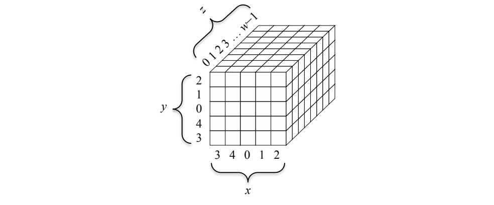

NIST FIPS 202 日本語訳
英語タイトル : SHA-3 Standard: Permutation-Based Hash and Extendable-Output Functions日本語タイトル : SHA-3 標準：置換ベースのハッシュ関数および拡張可能出力関数
公開日 : 2015-08-04
原文URL : https://csrc.nist.gov/pubs/fips/202/final
翻訳編集 : 自動生成（有志による非公式の日本語訳）, 原文取得日 : 2026-10-25, 訳文 : 491 / 491 ブロック
[要約] FIPS 202 は、NIST が SHA-3 コンペティションの勝者として選定した KECCAK アルゴリズムに基づく、SHA-3 関数ファミリを規定する標準です。SHA3-224、SHA3-256、SHA3-384、SHA3-512 の4つのハッシュ関数と、SHAKE128、SHAKE256 の2つの拡張可能出力関数（XOF）を定め、KECCAK-p 置換とスポンジ構造も示します。デジタル署名、鍵導出、擬似乱数ビット生成などの構成要素となるハッシュ関数であり、FIPS 180-4 の SHA-1 および SHA-2 を補完する位置づけです。
FIPS PUB 202
FIPS PUB 202
FEDERAL INFORMATION PROCESSING STANDARDS PUBLICATION
連邦情報処理標準出版物
SHA-3 Standard: Permutation-Based Hash and Extendable-Output Functions
SHA-3 標準：置換ベースのハッシュ関数および拡張可能出力関数
CATEGORY: COMPUTER SECURITY SUBCATEGORY: CRYPTOGRAPHY
カテゴリ：コンピュータセキュリティ サブカテゴリ：暗号
Information Technology Laboratory National Institute of Standards and Technology Gaithersburg, MD 20899-8900
Information Technology Laboratory 米国国立標準技術研究所 Gaithersburg, MD 20899-8900
This publication is available free of charge from: http://dx.doi.org/10.6028/NIST.FIPS.202
本出版物は次から無料で入手できる：http://dx.doi.org/10.6028/NIST.FIPS.202
August 2015
2015年8月
［米国商務省の紋章。公的な標章のため、この非公式サイトには掲載していない。原本 PDF を参照。］
U.S. Department of Commerce Penny Pritzker, Secretary
商務省 長官 Penny Pritzker
National Institute of Standards and Technology Willie May, Under Secretary of Commerce for Standards and Technology and Director
米国国立標準技術研究所 商務次官（標準技術担当）兼所長 Willie May
FOREWORD
まえがき
The Federal Information Processing Standards (FIPS) Publication Series of the National Institute of Standards and Technology (NIST) is the official series of publications relating to standards and guidelines adopted and promulgated under the provisions of the Federal Information Security Management Act (FISMA) of 2002.
米国国立標準技術研究所（NIST）の連邦情報処理標準（FIPS）出版物シリーズは、2002年連邦情報セキュリティマネジメント法（FISMA）の規定に基づいて採択・公布された標準およびガイドラインに関する公式の出版物シリーズである。
Comments concerning FIPS publications are welcomed and should be addressed to the Director, Information Technology Laboratory, National Institute of Standards and Technology, 100 Bureau Drive, Stop 8900, Gaithersburg, MD 20899-8900.
FIPS出版物に関するご意見を歓迎する。宛先は Director, Information Technology Laboratory, National Institute of Standards and Technology, 100 Bureau Drive, Stop 8900, Gaithersburg, MD 20899-8900 とすること。
Charles H. Romine, Director Information Technology Laboratory
Charles H. Romine, Director Information Technology Laboratory
Abstract
概要
This Standard specifies the Secure Hash Algorithm-3 (SHA-3) family of functions on binary data. Each of the SHA-3 functions is based on an instance of the KECCAK algorithm that NIST selected as the winner of the SHA-3 Cryptographic Hash Algorithm Competition. This Standard also specifies the KECCAK-p family of mathematical permutations, including the permutation that underlies KECCAK, in order to facilitate the development of additional permutation-based cryptographic functions.
本標準は、バイナリデータに対するSecure Hash Algorithm-3（SHA-3）関数ファミリを規定する。各SHA-3関数は、NISTがSHA-3暗号学的ハッシュアルゴリズムコンペティションの勝者として選定したKECCAKアルゴリズムのインスタンスに基づく。本標準はまた、追加の置換ベースの暗号関数の開発を促進するために、KECCAKの基盤となる置換を含む、数学的置換のKECCAK-pファミリも規定する。
The SHA-3 family consists of four cryptographic hash functions, called SHA3-224, SHA3-256, SHA3-384, and SHA3-512, and two extendable-output functions (XOFs), called SHAKE128 and SHAKE256.
SHA-3ファミリは、SHA3-224、SHA3-256、SHA3-384、SHA3-512と呼ばれる4つの暗号学的ハッシュ関数と、SHAKE128およびSHAKE256と呼ばれる2つの拡張可能出力関数（XOF）からなる。
Hash functions are components for many important information security applications, including 1) the generation and verification of digital signatures, 2) key derivation, and 3) pseudorandom bit generation. The hash functions specified in this Standard supplement the SHA-1 hash function and the SHA-2 family of hash functions that are specified in FIPS 180-4, the Secure Hash Standard.
ハッシュ関数は、1）デジタル署名の生成と検証、2）鍵導出、3）擬似乱数ビット生成をはじめとする、多くの重要な情報セキュリティ用途の構成要素である。本標準で規定するハッシュ関数は、Secure Hash StandardであるFIPS 180-4で規定されたSHA-1ハッシュ関数およびSHA-2ハッシュ関数ファミリを補完するものである。
Extendable-output functions are different from hash functions, but it is possible to use them in similar ways, with the flexibility to be adapted directly to the requirements of individual applications, subject to additional security considerations.
拡張可能出力関数はハッシュ関数とは異なるが、追加のセキュリティ上の考慮事項を条件として、ハッシュ関数と同様の方法で使用することができ、個々の用途の要件に直接適合させられる柔軟性を持つ。
Key words: computer security, cryptography, extendable-output function, Federal Information Processing Standard, hash algorithm, hash function, information security, KECCAK, message digest, permutation, SHA-3, sponge construction, sponge function, XOF.
キーワード：コンピュータセキュリティ、暗号、拡張可能出力関数、連邦情報処理標準、ハッシュアルゴリズム、ハッシュ関数、情報セキュリティ、KECCAK、メッセージダイジェスト、置換、SHA-3、スポンジ構造、スポンジ関数、XOF。
Federal Information Processing Standards Publication 202
連邦情報処理標準出版物202
August 2015
2015年8月
Announcing the
以下を公示する
SHA-3 STANDARD: PERMUTATION-BASED HASH AND EXTENDABLE OUTPUT FUNCTIONS
SHA-3 標準：置換ベースのハッシュ関数および拡張可能出力関数
Federal Information Processing Standards Publications (FIPS PUBS) are issued by the National Institute of Standards and Technology (NIST) after approval by the Secretary of Commerce pursuant to Section 5131 of the Information Technology Management Reform Act of 1996 (Public Law 104-106), and the Computer Security Act of 1987 (Public Law 100-235).
連邦情報処理標準出版物（FIPS PUBS）は、1996年情報技術管理改革法（Public Law 104-106）第5131条および1987年コンピュータセキュリティ法（Public Law 100-235）に従い、商務長官の承認を経て米国国立標準技術研究所（NIST）が発行する。
1.Name of Standard: SHA-3 Standard: Permutation-Based Hash and Extendable-Output Functions (FIPS PUB 202).
1.標準の名称：SHA-3 Standard: Permutation-Based Hash and Extendable-Output Functions（FIPS PUB 202）。
2.Category of Standard: Computer Security Standard, Cryptography.
2.標準のカテゴリ：コンピュータセキュリティ標準、暗号。
3.Explanation: This Standard (FIPS 202) specifies the Secure Hash Algorithm-3 (SHA-3) family of functions on binary data. Each of the SHA-3 functions is based on an instance of the KECCAK algorithm that NIST selected as the winner of the SHA-3 Cryptographic Hash Algorithm Competition. This Standard also specifies the KECCAK-p family of mathematical permutations, including the permutation that underlies KECCAK, which can serve as the main components of additional cryptographic functions that may be specified in the future.
3.説明：本標準（FIPS 202）は、バイナリデータに対するSecure Hash Algorithm-3（SHA-3）関数ファミリを規定する。各SHA-3関数は、NISTがSHA-3暗号学的ハッシュアルゴリズムコンペティションの勝者として選定したKECCAKアルゴリズムのインスタンスに基づく。本標準はまた、KECCAKの基盤となる置換を含む、数学的置換のKECCAK-pファミリも規定する。これらの置換は、将来規定される可能性のある追加の暗号関数の主要な構成要素として利用できる。
The SHA-3 family consists of four cryptographic hash functions and two extendable-output functions (XOFs). The cryptographic hash functions are called SHA3-224, SHA3-256, SHA3-384, and SHA3-512; and the XOFs are called SHAKE128 and SHAKE256.
SHA-3ファミリは、4つの暗号学的ハッシュ関数と2つの拡張可能出力関数（XOF）からなる。暗号学的ハッシュ関数はSHA3-224、SHA3-256、SHA3-384、SHA3-512と呼ばれ、XOFはSHAKE128およびSHAKE256と呼ばれる。
For hash functions, the input is called the message, and the output is called the (message) digest or the hash value. The length of the message can vary; the length of the digest is fixed. A cryptographic hash function is a hash function that is designed to provide special properties, including collision resistance and preimage resistance, that are important for many applications in information security. For example, a cryptographic hash function increases the security and efficiency of a digital signature scheme when the digest is digitally signed instead of the message itself. In this context, the collision resistance of the hash function provides assurance that the original message could not have been altered to a different message with the same hash value, and hence, the same signature. Other applications of cryptographic hash functions include pseudorandom bit generation, message authentication codes, and key derivation functions.
ハッシュ関数では、入力をメッセージと呼び、出力を（メッセージ）ダイジェストまたはハッシュ値と呼ぶ。メッセージの長さは可変であり、ダイジェストの長さは固定である。暗号学的ハッシュ関数とは、情報セキュリティの多くの用途で重要となる衝突耐性や原像計算困難性などの特別な性質を提供するように設計されたハッシュ関数である。たとえば、メッセージそのものではなくダイジェストにデジタル署名を施す場合、暗号学的ハッシュ関数はデジタル署名方式の安全性と効率を高める。この文脈では、ハッシュ関数の衝突耐性により、元のメッセージが同じハッシュ値、ひいては同じ署名を持つ別のメッセージに改変されえなかったことが保証される。暗号学的ハッシュ関数のその他の用途には、擬似乱数ビット生成、メッセージ認証コード、鍵導出関数がある。
The four SHA-3 hash functions specified in this Standard supplement the hash functions that are specified in FIPS 180-4 [1]: SHA-1 and the SHA-2 family. Together, both Standards provide resilience against future advances in hash function analysis, because they rely on fundamentally different design principles. In addition to design diversity, the hash functions in this Standard provide some complementary implementation and performance characteristics to those in FIPS 180-4.
本標準で規定する4つのSHA-3ハッシュ関数は、FIPS 180-4 [1]で規定されたハッシュ関数であるSHA-1およびSHA-2ファミリを補完する。両標準は根本的に異なる設計原理に基づくため、併せて用いることで、ハッシュ関数の解析における将来の進展に対する耐性が得られる。設計の多様性に加えて、本標準のハッシュ関数は、FIPS 180-4のハッシュ関数を補完する実装特性および性能特性をいくつか備える。
For XOFs, the length of the output can be chosen to meet the requirements of individual applications. The XOFs can be specialized to hash functions, subject to additional security considerations, or used in a variety of other applications. The approved uses of XOFs will be specified in NIST Special Publications.
XOFでは、出力の長さを個々の用途の要件に合わせて選択できる。XOFは、追加のセキュリティ上の考慮事項を条件としてハッシュ関数に特化させることも、その他のさまざまな用途に使用することもできる。XOFの承認された用途は、NIST Special Publicationsで規定される。
The KECCAK-p permutations were designed to be suitable as the main components for a variety of cryptographic functions, including keyed functions for authentication and/or encryption. The six SHA-3 functions can be considered as modes of operation (modes) of the KECCAK-p[1600,24] permutation. In the future, additional modes of this permutation or other KECCAK-p permutations may be specified and approved in FIPS publications or in NIST Special Publications.
KECCAK-p置換は、認証および／または暗号化のための鍵付き関数を含む、さまざまな暗号関数の主要な構成要素として適するように設計された。6つのSHA-3関数は、KECCAK-p[1600,24]置換の利用モード（モード）とみなすことができる。将来、この置換または他のKECCAK-p置換の追加のモードが、FIPS出版物またはNIST Special Publicationsで規定・承認される可能性がある。
4.Approving Authority: Secretary of Commerce.
4.承認機関：商務長官。
5.Maintenance Agency: U.S. Department of Commerce, National Institute of Standards and Technology (NIST), Information Technology Laboratory (ITL).
5.維持管理機関：商務省 米国国立標準技術研究所（NIST）情報技術研究所（ITL）。
6.Applicability: This Standard is applicable to all Federal departments and agencies for the protection of sensitive unclassified information that is not subject to Title 10 United States Code Section 2315 (10 USC 2315) and that is not within a national security system as defined in Title 40 United States Code Section 11103(a)(1) (40 USC 11103(a)(1)). Either this Standard or Federal Information Processing Standard (FIPS) 180 must be implemented wherever a secure hash algorithm is required for Federal applications, including as a component within other cryptographic algorithms and protocols. This Standard may be adopted and used by non-Federal Government organizations.
6.適用範囲：本標準は、合衆国法典第10編第2315条（10 USC 2315）の対象外であり、かつ合衆国法典第40編第11103条(a)(1)（40 USC 11103(a)(1)）に定義される国家安全保障システムに含まれない機微な非機密情報を保護するため、すべての連邦省庁に適用される。連邦の用途において、他の暗号アルゴリズムおよびプロトコル内の構成要素としての利用を含め、セキュアハッシュアルゴリズムが必要とされるあらゆる場合には、本標準または連邦情報処理標準（FIPS）180のいずれかを実装しなければならない。本標準は、連邦政府以外の組織が採用・使用してもよい。
7.Specifications: Federal Information Processing Standard (FIPS) 202, SHA-3 Standard: Permutation-Based Hash and Extendable-Output Functions (affixed).
7.仕様：Federal Information Processing Standard (FIPS) 202, SHA-3 Standard: Permutation-Based Hash and Extendable-Output Functions（添付）。
8.Implementations: Federal departments and agencies shall only use implementations of the KECCAK-p permutations within FIPS-approved or NIST-recommended modes of operation, such as the SHA-3 functions that are specified in this Standard. The SHA-3 functions may be implemented in software, firmware, hardware or any combination thereof. Only implementations of these functions that are validated by the Cryptographic Algorithm Validation Program will be considered as complying with this Standard. Information about the validation program can be obtained at http://csrc.nist.gov/groups/STM/cavp/index.html.
8.実装：連邦省庁は、本標準で規定するSHA-3関数など、FIPSで承認された利用モードまたはNISTが推奨する利用モードの中でのみ、KECCAK-p置換の実装を使用しなければならない。SHA-3関数は、ソフトウェア、ファームウェア、ハードウェア、またはそれらの任意の組み合わせで実装してよい。暗号アルゴリズム検証プログラム（Cryptographic Algorithm Validation Program）によって検証されたこれらの関数の実装のみが、本標準に準拠しているとみなされる。検証プログラムに関する情報は http://csrc.nist.gov/groups/STM/cavp/index.html から入手できる。
9.Implementation Schedule: This Standard is effective immediately. Applications or extensions of this Standard that depend upon the release of new or revised NIST Special Publications are effective upon final publication of the supporting Special Publications.
9.実施スケジュール：本標準は直ちに発効する。新規または改訂されたNIST Special Publicationsの発行に依存する本標準の適用または拡張は、その裏付けとなるSpecial Publicationsの最終版の発行時に発効する。
10.Patents: Implementations of the SHA-3 functions in this Standard may be covered by U.S. or foreign patents.
10.特許：本標準のSHA-3関数の実装は、米国または外国の特許の対象となる場合がある。
11.Export Control: Certain cryptographic devices and technical data regarding them are subject to Federal export controls. Exports of cryptographic modules implementing this Standard and technical data regarding them must comply with these Federal regulations and be licensed by the Bureau of Export Administration of the U.S. Department of Commerce. Information about export regulations is available at: http://www.bis.doc.gov/index.htm.
11.輸出管理：特定の暗号装置およびそれに関する技術データは、連邦の輸出管理の対象となる。本標準を実装した暗号モジュールおよびそれに関する技術データの輸出は、これらの連邦規則に従い、かつ商務省輸出管理局（Bureau of Export Administration）の許可を受けなければならない。輸出規制に関する情報は http://www.bis.doc.gov/index.htm から入手できる。
12.Qualifications: Although this Standard specifies mathematical functions that are suitable components for information security applications, conformance to this Standard does not assure that a particular implementation is secure. The responsible authority in each agency or department shall assure that an overall implementation provides an acceptable level of security. This Standard will be reviewed every five years in order to assess its adequacy.
12.適格性：本標準は情報セキュリティアプリケーションの構成要素として適した数学的関数を規定するが、本標準への適合は特定の実装が安全であることを保証するものではない。各省庁の責任当局は、実装全体が許容可能なレベルのセキュリティを提供することを保証しなければならない。本標準は、その妥当性を評価するために5年ごとに見直される。
13.Waiver Procedure: The Federal Information Security Management Act (FISMA) does not allow for waivers to a FIPS that is made mandatory by the Secretary of Commerce.
13.適用免除の手続き：Federal Information Security Management Act（FISMA）は、商務長官によって義務化されたFIPSについて適用免除を認めていない。
14.Where to Obtain Copies of the Standard: This publication is available electronically at http://csrc.nist.gov/publications/. Other computer security publications issued by NIST are available at the same web site.
14.本標準の入手先：本出版物は http://csrc.nist.gov/publications/ で電子的に入手できる。NISTが発行するその他のコンピュータセキュリティ関連の出版物も同じWebサイトで入手できる。
Federal Information Processing Standards Publication 202
連邦情報処理標準出版物 202
Specifications for the
以下に関する仕様
SHA-3 STANDARD: PERMUTATION-BASED HASH AND EXTENDABLE-OUTPUT FUNCTIONS
SHA-3標準：置換に基づくハッシュ関数および拡張可能出力関数
1 INTRODUCTION — 1
1 序論 — 1
2 GLOSSARY — 2
2 用語集 — 2
2.1 TERMS AND ACRONYMS — 2
2.1 用語および略語 — 2
2.2 ALGORITHM PARAMETERS AND OTHER VARIABLES — 4
2.2 アルゴリズムのパラメータおよびその他の変数 — 4
2.3 BASIC OPERATIONS AND FUNCTIONS — 5
2.3 基本的な演算および関数 — 5
2.4 SPECIFIED FUNCTIONS — 6
2.4 規定される関数 — 6
3 KECCAK-P PERMUTATIONS — 7
3 KECCAK-P置換 — 7
3.1 STATE — 7
3.1 状態 — 7
3.1.1 Parts of the State Array — 8
3.1.1 状態配列の部分 — 8
3.1.2 Converting Strings to State Arrays — 9
3.1.2 文字列から状態配列への変換 — 9
3.1.3 Converting State Arrays to Strings — 10
3.1.3 状態配列から文字列への変換 — 10
3.1.4 Labeling Convention for the State Array — 11
3.1.4 状態配列のラベル付け規約 — 11
3.2 STEP MAPPINGS — 11
3.2 ステップ写像 — 11
3.2.1 Specification of θ — 11
3.2.1 θの仕様 — 11
3.2.2 Specification of ρ — 12
3.2.2 ρの仕様 — 12
3.2.3 Specification of π — 14
3.2.3 πの仕様 — 14
3.2.4 Specification of χ — 15
3.2.4 χの仕様 — 15
3.2.5 Specification of ι — 15
3.2.5 ιの仕様 — 15
3.3 KECCAK-\(p[b, n_r]\) — 16
3.3 KECCAK-\(p[b, n_r]\) — 16
3.4 COMPARISON WITH KECCAK-f — 17
3.4 KECCAK-fとの比較 — 17
4 SPONGE CONSTRUCTION — 17
4 スポンジ構造 — 17
5 KECCAK — 19
5 KECCAK — 19
5.1 SPECIFICATION OF pad10*1 — 19
5.1 pad10*1の仕様 — 19
5.2 SPECIFICATION OF KECCAK[c] — 20
5.2 KECCAK[c]の仕様 — 20
6 SHA-3 FUNCTION SPECIFICATIONS — 20
6 SHA-3関数の仕様 — 20
6.1 SHA-3 HASH FUNCTIONS — 20
6.1 SHA-3ハッシュ関数 — 20
6.2 SHA-3 EXTENDABLE-OUTPUT FUNCTIONS — 20
6.2 SHA-3拡張可能出力関数 — 20
6.3 ALTERNATE DEFINITIONS OF SHA-3 EXTENDABLE-OUTPUT FUNCTIONS — 21
6.3 SHA-3拡張可能出力関数の別定義 — 21
7 CONFORMANCE — 21
7 適合性 — 21
A SECURITY — 23
A セキュリティ — 23
A.1 SUMMARY — 23
A.1 概要 — 23
A.2 ADDITIONAL CONSIDERATION FOR EXTENDABLE-OUTPUT FUNCTIONS — 24
A.2 拡張可能出力関数に関する追加の考慮事項 — 24
B EXAMPLES — 25
B 例 — 25
B.1 CONVERSION FUNCTIONS — 26
B.1 変換関数 — 26
B.2 HEXADECIMAL FORM OF PADDING BITS — 27
B.2 パディングビットの16進表記 — 27
C OBJECT IDENTIFIERS — 28
C オブジェクト識別子 — 28
D REFERENCES — 28
D 参考文献 — 28
Figures
図
Figure 1: Parts of the state array, organized by dimension [8] — 8
図1：次元別に整理した状態配列の部分 [8] — 8
Figure 2: The x, y, and z coordinates for the diagrams of the step mappings — 11
図2：ステップ写像の図におけるx、y、z座標 — 11
Figure 3: Illustration of θ applied to a single bit [8] — 12
図3：単一ビットに適用したθの図解 [8] — 12
Figure 4: Illustration of ρ for b = 200 [8] — 13
図4：b = 200の場合のρの図解 [8] — 13
Figure 5: Illustration of π applied to a single slice [8] — 14
図5：単一スライスに適用したπの図解 [8] — 14
Figure 6: Illustration of χ applied to a single row [8] — 15
図6：単一の行に適用したχの図解 [8] — 15
Figure 7: The sponge construction: Z = SPONGE[f, pad, r](N, d) [4] — 18
図7：スポンジ構造：Z = SPONGE[f, pad, r](N, d) [4] — 18
Tables
表
Table 1: KECCAK-p permutation widths and related quantities — 7
表1：KECCAK-p置換の幅および関連する量 — 7
Table 2: Offsets of ρ [8] — 13
表2：ρのオフセット [8] — 13
Table 3: Input block sizes for HMAC — 22
表3：HMACの入力ブロックサイズ — 22
Table 4: Security strengths of the SHA-1, SHA-2, and SHA-3 functions — 23
表4：SHA-1、SHA-2、SHA-3関数のセキュリティ強度 — 23
Table 5: Illustration of h2b — 27
表5：h2bの図解 — 27
Table 6: Hexadecimal Form of SHA-3 Padding for Byte-Aligned Messages — 28
表6：バイト境界に揃ったメッセージに対するSHA-3パディングの16進表記 — 28
1 INTRODUCTION
1 序論
This Standard specifies a new family of functions that supplement SHA-1 and the SHA-2 family of hash functions specified in FIPS 180-4 [1]. This family, called SHA-3 (Secure Hash Algorithm-3), is based on KECCAK [2]—the algorithm1 that NIST selected as the winner of the public SHA-3 Cryptographic Hash Algorithm Competition [3]. The SHA-3 family consists of four cryptographic hash functions and two extendable-output functions. These six functions share the structure that is described in [4], namely, the sponge construction; functions with this structure are called sponge functions.
本標準は、FIPS 180-4 [1] で規定されるSHA-1およびSHA-2ファミリのハッシュ関数を補完する新たな関数ファミリを規定する。SHA-3（Secure Hash Algorithm-3）と呼ばれるこのファミリは、KECCAK [2] に基づく。KECCAKは、公開で実施されたSHA-3 Cryptographic Hash Algorithm Competition [3] の勝者としてNISTが選定したアルゴリズム1である。SHA-3ファミリは、4つの暗号学的ハッシュ関数と2つの拡張可能出力関数からなる。これら6つの関数は、[4] で記述された構造、すなわちスポンジ構造を共有する。この構造をもつ関数はスポンジ関数と呼ばれる。
A hash function is a function on binary data (i.e., bit strings) for which the length of the output is fixed.2 The input to a hash function is called the message, and the output is called the (message) digest or hash value. The digest often serves as a condensed representation of the message. The four SHA-3 hash functions are named SHA3-224, SHA3-256, SHA3-384, and SHA3-512; in each case, the suffix after the dash indicates the fixed length of the digest, e.g., SHA3-256 produces 256-bit digests. The SHA-2 functions, i.e., SHA-224, SHA-256, SHA-384 SHA-512, SHA-512/224, and SHA-512/256, offer the same set of digest lengths. Thus, the SHA-3 hash functions can be implemented as alternatives to the SHA-2 functions, or vice versa.
ハッシュ関数とは、バイナリデータ（すなわちビット列）上の関数であって、出力の長さが固定されたものである。2ハッシュ関数への入力はメッセージと呼ばれ、出力は（メッセージ）ダイジェストまたはハッシュ値と呼ばれる。ダイジェストは多くの場合、メッセージの縮約された表現として機能する。4つのSHA-3ハッシュ関数はSHA3-224、SHA3-256、SHA3-384、SHA3-512と名付けられている。いずれの場合も、ダッシュの後の接尾辞はダイジェストの固定長を示す。たとえば、SHA3-256は256ビットのダイジェストを生成する。SHA-2関数、すなわちSHA-224、SHA-256、SHA-384、SHA-512、SHA-512/224、SHA-512/256も、同じ組のダイジェスト長を提供する。したがって、SHA-3ハッシュ関数はSHA-2関数の代替として実装でき、その逆も可能である。
An extendable-output function (XOF) is a function on bit strings (also called messages) in which the output can be extended to any desired length. The two SHA-3 XOFs are named SHAKE128 and SHAKE256.3 The suffixes “128” and “256” indicate the security strengths that these two functions can generally4 support, in contrast to the suffixes for the hash functions, which indicate the digest lengths. SHAKE128 and SHAKE256 are the first XOFs that NIST has standardized.
拡張可能出力関数（XOF）とは、ビット列（メッセージとも呼ばれる）上の関数であって、出力を任意の所望の長さに拡張できるものである。2つのSHA-3 XOFはSHAKE128およびSHAKE256と名付けられている。3 接尾辞「128」および「256」は、これら2つの関数が一般に4サポートできるセキュリティ強度を示す。これは、ダイジェスト長を示すハッシュ関数の接尾辞とは対照的である。SHAKE128およびSHAKE256は、NISTが標準化した最初のXOFである。
The six SHA-3 functions are designed to provide special properties, such as resistance to collision, preimage, and second preimage attacks. The level of resistance to these three types of attacks is summarized in Sec. A.1. Cryptographic hash functions are fundamental components in a variety of information security applications, such as digital signature generation and verification, key derivation, and pseudorandom bit generation.
6つのSHA-3関数は、衝突攻撃、原像攻撃、第二原像攻撃への耐性などの特別な性質を提供するよう設計されている。これら3種類の攻撃に対する耐性の水準はSec. A.1にまとめる。暗号学的ハッシュ関数は、デジタル署名の生成と検証、鍵導出、擬似乱数ビット生成など、さまざまな情報セキュリティアプリケーションの基本的な構成要素である。
The digest lengths in FIPS-approved hash functions are 160, 224, 256, 384, and 512 bits. When an application requires a cryptographic hash function with a non-standard digest length, an XOF is a natural alternative to constructions that involve multiple invocations of a hash function and/or truncation of the output bits. However, XOFs are subject to the additional security consideration that is described in Sec. A.2.
FIPSで承認されたハッシュ関数のダイジェスト長は、160、224、256、384、512ビットである。アプリケーションが標準外のダイジェスト長をもつ暗号学的ハッシュ関数を必要とする場合、XOFは、ハッシュ関数の複数回の呼出しや出力ビットの切り詰め（またはその両方）を伴う構成に代わる自然な選択肢である。ただし、XOFにはSec. A.2で述べる追加のセキュリティ上の考慮事項が適用される。
Each of the six SHA-3 functions employs the same underlying permutation as the main component in the sponge construction. In effect, the SHA-3 functions are modes of operation
6つのSHA-3関数はいずれも、スポンジ構造の主要な構成要素として同一の基礎となる置換を用いる。実質的に、SHA-3関数は動作モード
(modes) of the permutation. In this Standard, the permutation is specified as an instance of a family of permutations, called KECCAK-p, in order to provide the flexibility to modify its size and security parameters in the development of any additional modes in future documents.
（モード）、すなわちその置換のモードである。本標準では、将来の文書で追加のモードを開発する際にそのサイズとセキュリティパラメータを変更できる柔軟性を持たせるため、この置換を、KECCAK-pと呼ばれる置換ファミリのインスタンスとして規定する。
The four SHA-3 hash functions differ slightly from the instances of KECCAK that were proposed for the SHA-3 competition [3]. In particular, a two-bit suffix is appended to the messages, in order to distinguish the SHA-3 hash functions from the SHA-3 XOFs, and to facilitate the development of new variants of the SHA-3 functions that can be dedicated to individual application domains.
4つのSHA-3ハッシュ関数は、SHA-3コンペティション [3] に提案されたKECCAKのインスタンスとはわずかに異なる。具体的には、SHA-3ハッシュ関数とSHA-3 XOFを区別するため、また個々のアプリケーション領域に特化できるSHA-3関数の新たな派生版の開発を容易にするため、メッセージに2ビットの接尾辞が付加される。
The two SHA-3 XOFs are also specified in a manner that allows for the development of dedicated variants. Moreover, the SHA-3 XOFs are compatible with the Sakura coding scheme [6] for tree hashing [7], in order to support the development of parallelizable variants of the XOFs, to be specified in a separate document.
2つのSHA-3 XOFも、特化した派生版を開発できるような形で規定されている。さらに、SHA-3 XOFは木ハッシュ [7] のためのSakura符号化方式 [6] と互換性がある。これは、別の文書で規定される予定のXOFの並列化可能な派生版の開発を支えるためである。
Most of the notation and terminology in this Standard is consistent with the specification of KECCAK in [8].
本標準の表記と用語の大部分は、[8] におけるKECCAKの仕様と整合している。
2 GLOSSARY
2 用語集
2.1 Terms and Acronyms
2.1 用語および略語
bit — A binary digit: 0 or 1. In this Standard, bits are indicated in the Courier New font.
bit — 2進数字、すなわち0または1。本標準では、ビットはCourier Newフォントで示す。
byte — A sequence of eight bits.
byte — 8ビットの列。
capacity — In the sponge construction, the width of the underlying function minus the rate.
capacity — スポンジ構造において、基礎となる関数の幅からレートを引いたもの。
column — For a state array, a sub-array of five bits with constant \(x\) and \(z\) coordinates.
column — 状態配列において、\(x\) 座標と \(z\) 座標が一定である5ビットの部分配列。
digest — The output of a cryptographic hash function. Also called the hash value.
digest — 暗号学的ハッシュ関数の出力。ハッシュ値とも呼ばれる。
domain separation — For a function, a partitioning of the inputs to different application domains so that no input is assigned to more than one domain.
domain separation — 関数について、どの入力も2つ以上の領域に割り当てられないように、入力を異なるアプリケーション領域に分割すること。
extendable-output function (XOF) — A function on bit strings in which the output can be extended to any desired length.
extendable-output function (XOF) — ビット列上の関数であって、出力を任意の所望の長さに拡張できるもの。
FIPS — Federal Information Processing Standard.
FIPS — Federal Information Processing Standard（連邦情報処理標準）。
FISMA — Federal Information Security Management Act.
FISMA — Federal Information Security Management Act。
hash function — A function on bit strings in which the length of the output is fixed. The output often serves as a condensed representation of the input.
hash function — ビット列上の関数であって、出力の長さが固定されたもの。出力は多くの場合、入力の縮約された表現として機能する。
hash value — See digest.
hash value — digestを参照。
HMAC — Keyed-Hash Message Authentication Code.
HMAC — Keyed-Hash Message Authentication Code（鍵付きハッシュメッセージ認証コード）。
KDF — Key derivation function.
KDF — Key derivation function（鍵導出関数）。
KECCAK — The family of all sponge functions with a KECCAK-f permutation as the underlying function and multi-rate padding as the padding rule. KECCAK was originally specified in [8].
KECCAK — KECCAK-f置換を基礎となる関数とし、マルチレートパディングをパディング規則とするすべてのスポンジ関数のファミリ。KECCAKは当初 [8] で規定された。
lane — For a state array of a KECCAK-p permutation with width \(b\), a sub-array of \(b/25\) bits with constant \(x\) and \(y\) coordinates.
lane — 幅 \(b\) のKECCAK-p置換の状態配列において、\(x\) 座標と \(y\) 座標が一定である \(b/25\) ビットの部分配列。
message — A bit string of any length that is the input to a SHA-3 function.
message — SHA-3関数への入力となる任意の長さのビット列。
multi-rate padding — The padding rule pad10*1, whose output is a 1, followed by a (possibly empty) string of 0s, followed by a 1.
multi-rate padding — パディング規則pad10*1。その出力は、1の後に（空の場合もある）0の列が続き、その後に1が続くものである。
NIST — National Institute of Standards and Technology.
NIST — National Institute of Standards and Technology（米国国立標準技術研究所）。
plane — For a state array of a KECCAK-p permutation with width \(b\), a sub-array of \(b/5\) bits with a constant \(y\) coordinate.
plane — 幅 \(b\) のKECCAK-p置換の状態配列において、\(y\) 座標が一定である \(b/5\) ビットの部分配列。
rate — In the sponge construction, the number of input bits processed or output bits generated per invocation of the underlying function.
rate — スポンジ構造において、基礎となる関数の1回の呼出しあたりに処理される入力ビット数または生成される出力ビット数。
round — The sequence of step mappings that is iterated in the calculation of a KECCAK-p permutation.
round — KECCAK-p置換の計算において反復されるステップ写像の列。
round constant — For each round of a KECCAK-p permutation, a lane value that is determined by the round index. The round constant is the second input to the \(\iota\) step mapping.
round constant — KECCAK-p置換の各ラウンドについて、ラウンドインデックスによって決まるレーンの値。ラウンド定数は \(\iota\) ステップ写像の2番目の入力である。
round index — The value of the integer index for the rounds of a KECCAK-p permutation.
round index — KECCAK-p置換のラウンドを表す整数インデックスの値。
row — For a state array, a sub-array of five bits with constant \(y\) and \(z\) coordinates.
row — 状態配列において、\(y\) 座標と \(z\) 座標が一定である5ビットの部分配列。
SHA-3 — Secure Hash Algorithm-3.
SHA-3 — Secure Hash Algorithm-3。
SHAKE — Secure Hash Algorithm KECCAK.
SHAKE — Secure Hash Algorithm KECCAK。
sheet — For a state array of a KECCAK-p permutation with width \(b\), a sub-array of \(b/5\) bits with a constant \(x\) coordinate.
sheet — 幅 \(b\) のKECCAK-p置換の状態配列において、\(x\) 座標が一定である \(b/5\) ビットの部分配列。
slice — For a state array, a sub-array of 25 bits with a constant \(z\) coordinate.
slice — 状態配列において、\(z\) 座標が一定である25ビットの部分配列。
sponge construction — The method originally specified in [4] for defining a function from the following: 1) an underlying function on bit strings of a fixed length, 2) a padding rule, and 3) a rate. Both the input and the output of the resulting function are bit strings that can be arbitrarily long.
sponge construction — 1) 固定長のビット列上の基礎となる関数、2) パディング規則、3) レートから関数を定義するための方法であり、当初 [4] で規定された。結果として得られる関数の入力と出力はいずれも、任意の長さをとりうるビット列である。
sponge function — A function that is defined according to the sponge construction, possibly specialized to a fixed output length.
sponge function — スポンジ構造に従って定義される関数。固定の出力長に特化される場合もある。
state — An array of bits that is repeatedly updated within a computational procedure. For a KECCAK-p permutation, the state is represented either as a three-dimensional array or as a bit string.
state — 計算手続きの中で繰り返し更新されるビットの配列。KECCAK-p置換では、状態は3次元配列またはビット列のいずれかとして表現される。
state array — For a KECCAK-p permutation, a 5-by-5-by-w array of bits that represents the state. The indices for the x, y, and z coordinates range from 0 to 4, 0 to 4, and 0 to w-1, respectively.
state array — KECCAK-p置換において、状態を表す5×5×wのビット配列。x、y、z座標のインデックスの範囲はそれぞれ0から4、0から4、0からw-1である。
step mapping — One of the five components of a round of a KECCAK-p permutation: θ, ρ, π, χ, or ι.
step mapping — KECCAK-p置換のラウンドを構成する5つの要素θ、ρ、π、χ、ιのいずれか。
string — For a nonnegative integer m, a sequence of m symbols.
string — 非負整数mに対し、m個の記号の列。
width — In the sponge construction, the fixed length of the inputs and the outputs of the underlying function.
width — スポンジ構造において、基礎となる関数の入力および出力の固定長。
XOF — See extendable-output function.
XOF — extendable-output functionを参照。
XOR — The Boolean Exclusive-OR operation, denoted by the symbol ⊕.
XOR — ブール排他的論理和演算。記号⊕で表す。
2.2 Algorithm Parameters and Other Variables
2.2 アルゴリズムのパラメータおよびその他の変数
\(\mathbf{A}\) — A state array.
\(\mathbf{A}\) — 状態配列。
\(\mathbf{A}[x, y, z]\) — For a state array \(\mathbf{A}\), the bit that corresponds to the triple \((x, y, z)\).
\(\mathbf{A}[x, y, z]\) — 状態配列 \(\mathbf{A}\) において、3つ組 \((x, y, z)\) に対応するビット。
\(b\) — The width of a KECCAK-p permutation in bits.
\(b\) — KECCAK-p置換の幅（ビット単位）。
\(c\) — The capacity of a sponge function.
\(c\) — スポンジ関数のキャパシティ。
\(d\) — The length of the digest of a hash function or the requested length of the output of an XOF, in bits.
\(d\) — ハッシュ関数のダイジェストの長さ、またはXOFに要求される出力の長さ（ビット単位）。
\(f\) — The generic underlying function for the sponge construction.
\(f\) — スポンジ構造における汎用的な基礎となる関数。
\(i_r\) — The round index for a KECCAK-p permutation.
\(i_r\) — KECCAK-p置換のラウンドインデックス。
\(J\) — The input string to RawSHAKE128 or RawSHAKE256.
\(J\) — RawSHAKE128またはRawSHAKE256への入力文字列。
\(\ell\) — For a KECCAK-\(p\) permutation, the binary logarithm of the lane size, i.e., \(\log_2(w)\).
\(\ell\) — KECCAK-\(p\) 置換において、レーンサイズの2を底とする対数、すなわち \(\log_2(w)\)。
\(\mathit{Lane}(i, j)\) — For a state array \(\mathbf{A}\), a string of all the bits of the lane whose \(x\) and \(y\) coordinates are \(i\) and \(j\).
\(\mathit{Lane}(i, j)\) — 状態配列 \(\mathbf{A}\) において、\(x\) 座標と \(y\) 座標がそれぞれ \(i\) と \(j\) であるレーンのすべてのビットからなる文字列。
\(M\) — The input string to a SHA-3 hash or XOF function.
\(M\) — SHA-3ハッシュ関数またはXOFへの入力文字列。
\(N\) — The input string to \(\mathrm{SPONGE}[f, \mathrm{pad}, r]\) or KECCAK[\(c\)].
\(N\) — \(\mathrm{SPONGE}[f, \mathrm{pad}, r]\) またはKECCAK[\(c\)] への入力文字列。
\(n_r\) — The number of rounds for a KECCAK-\(p\) permutation.
\(n_r\) — KECCAK-\(p\) 置換のラウンド数。
pad — The generic padding rule for the sponge construction.
pad — スポンジ構造における汎用的なパディング規則。
\(\mathit{Plane}(j)\) — For a state array \(\mathbf{A}\), a string of all the bits of the plane whose \(y\) coordinate is \(j\).
\(\mathit{Plane}(j)\) — 状態配列 \(\mathbf{A}\) において、\(y\) 座標が \(j\) であるプレーンのすべてのビットからなる文字列。
\(r\) — The rate of a sponge function.
\(r\) — スポンジ関数のレート。
\(RC\) — For a round of a KECCAK-\(p\) permutation, the round constant.
\(RC\) — KECCAK-\(p\) 置換のラウンドにおけるラウンド定数。
\(w\) — The lane size of a KECCAK-\(p\) permutation in bits, i.e., \(b/25\).
\(w\) — KECCAK-\(p\) 置換のレーンサイズ（ビット単位）、すなわち \(b/25\)。
2.3 Basic Operations and Functions
2.3 基本的な演算および関数
\(\mathtt{0}^s\) — For a positive integer \(s\), \(\mathtt{0}^s\) is the string that consists of \(s\) consecutive 0s. If \(s = 0\), then \(\mathtt{0}^s\) is the empty string.
\(\mathtt{0}^s\) — 正の整数 \(s\) に対し、\(\mathtt{0}^s\) は \(s\) 個の連続する0からなる文字列である。\(s = 0\) の場合、\(\mathtt{0}^s\) は空文字列である。
\(\mathrm{len}(X)\) — For a bit string \(X\), \(\mathrm{len}(X)\) is the length of \(X\) in bits.
\(\mathrm{len}(X)\) — ビット列 \(X\) に対し、\(\mathrm{len}(X)\) は \(X\) のビット単位の長さである。
\(X[i]\) — For a string \(X\) and an integer \(i\) such that \(0 \le i < \mathrm{len}(X)\), \(X[i]\) is the bit of \(X\) with index \(i\). Bit strings are depicted with indices increasing from left to right, so that X[0] appears at the left, followed by X[1], etc. For example, if \(X = \mathtt{101000}\), then \(X[2] = 1\).
\(X[i]\) — 文字列 \(X\) と \(0 \le i < \mathrm{len}(X)\) を満たす整数 \(i\) に対し、\(X[i]\) はインデックス \(i\) をもつ \(X\) のビットである。ビット列はインデックスが左から右へ増加するように表記するので、X[0]が左端に現れ、その後にX[1]などが続く。たとえば、\(X = \mathtt{101000}\) ならば \(X[2] = 1\) である。
\(\mathrm{Trunc}_s(X)\) — For a positive integer \(s\) and a string \(X\), \(\mathrm{Trunc}_s(X)\) is the string comprised of bits \(X[0]\) to \(X[s-1]\). For example, \(\mathrm{Trunc}_2(\mathtt{10100}) = \mathtt{10}\).
\(\mathrm{Trunc}_s(X)\) — 正の整数 \(s\) と文字列 \(X\) に対し、\(\mathrm{Trunc}_s(X)\) はビット \(X[0]\) から \(X[s-1]\) までからなる文字列である。たとえば、\(\mathrm{Trunc}_2(\mathtt{10100}) = \mathtt{10}\) である。
\(X \oplus Y\) — For strings \(X\) and \(Y\) of equal bit length, \(X \oplus Y\) is the string that results from applying the Boolean exclusive-OR operation to \(X\) and \(Y\) at each bit position. For example, \(\mathtt{1100} \oplus \mathtt{1010} = \mathtt{0110}\).
\(X \oplus Y\) — 等しいビット長の文字列 \(X\) と \(Y\) に対し、\(X \oplus Y\) は \(X\) と \(Y\) の各ビット位置にブール排他的論理和演算を適用した結果の文字列である。たとえば、\(\mathtt{1100} \oplus \mathtt{1010} = \mathtt{0110}\) である。
\(X \,\|\, Y\) — For strings \(X\) and \(Y\), \(X \,\|\, Y\) is the concatenation of \(X\) and \(Y\). For example, \(\mathtt{11001} \,\|\, \mathtt{010} = \mathtt{11001010}\).
\(X \,\|\, Y\) — 文字列 \(X\) と \(Y\) に対し、\(X \,\|\, Y\) は \(X\) と \(Y\) の連結である。たとえば、\(\mathtt{11001} \,\|\, \mathtt{010} = \mathtt{11001010}\) である。
\(m/n\) — For integers \(m\) and \(n\), \(m/n\) is the quotient, i.e., \(m\) divided by \(n\).
\(m/n\) — 整数 \(m\) と \(n\) に対し、\(m/n\) は商、すなわち \(m\) を \(n\) で割ったものである。
\(m \bmod n\) — For integers \(m\) and \(n\), \(m \bmod n\) is the integer \(r\) for which \(0 \le r < n\) and \(m-r\) is a multiple of \(n\). For example, \(11 \bmod 5 = 1\), and \(-11 \bmod 5 = 4\).
\(m \bmod n\) — 整数 \(m\) と \(n\) に対し、\(m \bmod n\) は、\(0 \le r < n\) かつ \(m-r\) が \(n\) の倍数となる整数 \(r\) である。たとえば、\(11 \bmod 5 = 1\)、\(-11 \bmod 5 = 4\) である。
\(\lceil x \rceil\) — For a real number \(x\), \(\lceil x \rceil\) is the least integer that is not strictly less than \(x\). For example, \(\lceil 3.2 \rceil = 4\), \(\lceil -3.2 \rceil = -3\), and \(\lceil 6 \rceil = 6\).
\(\lceil x \rceil\) — 実数 \(x\) に対し、\(\lceil x \rceil\) は \(x\) より真に小さくはない最小の整数である。たとえば、\(\lceil 3.2 \rceil = 4\)、\(\lceil -3.2 \rceil = -3\)、\(\lceil 6 \rceil = 6\) である。
\(\log_2(x)\) — For a positive real number \(x\), \(\log_2(x)\) is the real number \(y\) such that \(2^y = x\).
\(\log_2(x)\) — 正の実数 \(x\) に対し、\(\log_2(x)\) は \(2^y = x\) を満たす実数 \(y\) である。
\(\min(x, y)\) — For real numbers \(x\) and \(y\), \(\min(x, y)\) is the minimum of \(x\) and \(y\). For example, \(\min(9, 33) = 9\).
\(\min(x, y)\) — 実数 \(x\) と \(y\) に対し、\(\min(x, y)\) は \(x\) と \(y\) の最小値である。たとえば、\(\min(9, 33) = 9\) である。
2.4 Specified Functions
2.4 規定される関数
The following higher-level functions are specified in this Standard:
本標準では、次の上位レベルの関数を規定する。
\(\theta, \rho, \pi, \chi, \iota\) — The five step mappings that comprise a round.
\(\theta, \rho, \pi, \chi, \iota\) — ラウンドを構成する5つのステップ写像。
KECCAK[\(c\)] — The KECCAK instance with KECCAK-\(f\)[1600] as the underlying permutation and capacity \(c\).
KECCAK[\(c\)] — KECCAK-\(f\)[1600]を基礎となる置換とし、キャパシティを \(c\) とするKECCAKのインスタンス。
KECCAK-\(f\)[\(b\)] — The family of seven permutations originally specified in [8] as the underlying function for KECCAK. The set of values for the width \(b\) of the permutations is {25, 50, 100, 200, 400, 800, 1600}.
KECCAK-\(f\)[\(b\)] — KECCAKの基礎となる関数として当初 [8] で規定された7つの置換のファミリ。置換の幅 \(b\) がとる値の集合は{25, 50, 100, 200, 400, 800, 1600}である。
KECCAK-\(p\)[\(b, n_r\)] — The generalization of the KECCAK-\(f\)[\(b\)] permutations that is defined in this Standard by converting the number of rounds \(n_r\) to an input parameter.
KECCAK-\(p\)[\(b, n_r\)] — KECCAK-\(f\)[\(b\)] 置換を一般化したものであり、本標準においてラウンド数 \(n_r\) を入力パラメータとすることで定義される。
pad10*1 — The multi-rate padding rule for KECCAK, originally specified in [8].
pad10*1 — KECCAKのためのマルチレートパディング規則。当初 [8] で規定された。
RawSHAKE128 An intermediate function in the alternate definition of SHAKE128.
RawSHAKE128 SHAKE128の別定義における中間関数。
RawSHAKE256 — An intermediate function in the alternate definition of SHAKE256.
RawSHAKE256 — SHAKE256の別定義における中間関数。
\(rc\) — The function that generates the variable bits of the round constants.
\(rc\) — ラウンド定数の可変ビットを生成する関数。
Rnd — The round function of a KECCAK-\(p\) permutation.
Rnd — KECCAK-\(p\) 置換のラウンド関数。
SHA3-224 — The SHA-3 hash function that produces 224-bit digests.
SHA3-224 — 224ビットのダイジェストを生成するSHA-3ハッシュ関数。
SHA3-256 — The SHA-3 hash function that produces 256-bit digests.
SHA3-256 — 256ビットのダイジェストを生成するSHA-3ハッシュ関数。
SHA3-384 — The SHA-3 hash function that produces 384-bit digests.
SHA3-384 — 384ビットのダイジェストを生成するSHA-3ハッシュ関数。
SHA3-512 — The SHA-3 hash function that produces 512-bit digests.
SHA3-512 — 512ビットのダイジェストを生成するSHA-3ハッシュ関数。
SHAKE128 — The SHA-3 XOF that generally supports 128 bits of security strength, if the output is sufficiently long; see Sec. A.1.
SHAKE128 — 出力が十分に長い場合に、一般に128ビットのセキュリティ強度をサポートするSHA-3 XOF。Sec. A.1を参照のこと。
SHAKE256 — The SHA-3 XOF that generally supports 256 bits of security strength, if the output is sufficiently long; see Sec. A.1.
SHAKE256 — 出力が十分に長い場合に、一般に256ビットのセキュリティ強度をサポートするSHA-3 XOF。Sec. A.1を参照のこと。
\(\mathrm{SPONGE}[f, \mathrm{pad}, r]\) — The sponge function in which the underlying function is \(f\), the padding rule is pad, and the rate is \(r\).
\(\mathrm{SPONGE}[f, \mathrm{pad}, r]\) — 基礎となる関数が \(f\)、パディング規則がpad、レートが \(r\) であるスポンジ関数。
3 KECCAK-\(p\) PERMUTATIONS
3 KECCAK-\(p\) 置換
In this section, the KECCAK-\(p\) permutations are specified, with two parameters: 1) the fixed length of the strings that are permuted, called the width of the permutation, and 2) the number of iterations of an internal transformation, called a round. The width is denoted by \(b\), and the number of rounds is denoted by \(n_r\). The KECCAK-\(p\) permutation with \(n_r\) rounds and width \(b\) is denoted by KECCAK-\(p[b, n_r]\); the permutation is defined for any \(b\) in \(\{25, 50, 100, 200, 400, 800, 1600\}\) and any positive integer \(n_r\).
本節では、KECCAK-\(p\) 置換を2つのパラメータとともに規定する。すなわち、1) 置換される文字列の固定長（置換の幅と呼ぶ）、2) 内部変換の反復回数（1回の内部変換をラウンドと呼ぶ）である。幅を \(b\)、ラウンド数を \(n_r\) で表す。\(n_r\) ラウンドで幅 \(b\) のKECCAK-\(p\) 置換をKECCAK-\(p[b, n_r]\) で表す。この置換は、\(\{25, 50, 100, 200, 400, 800, 1600\}\) に属する任意の \(b\) と任意の正の整数 \(n_r\) に対して定義される。
A round of a KECCAK-\(p\) permutation, denoted by Rnd, consists of a sequence of five transformations, which are called the step mappings. The permutation is specified in terms of an array of values for \(b\) bits that is repeatedly updated, called the state; the state is initially set to the input values of the permutation.
KECCAK-\(p\) 置換のラウンドはRndで表され、ステップ写像と呼ばれる5つの変換の列からなる。この置換は、状態と呼ばれる、繰り返し更新される \(b\) ビットの値の配列によって規定される。状態は最初に置換の入力値に設定される。
The notation and terminology for the state are described in Sec. 3.1. The step mappings are specified in Sec. 3.2. The KECCAK-\(p\) permutations, including the round function Rnd, are specified in Sec. 3.3. The relationship of the KECCAK-\(p\) permutations to the KECCAK-\(f\) permutations that were defined for KECCAK in [8] is described in Sec. 3.4.
状態の表記と用語はSec. 3.1で述べる。ステップ写像はSec. 3.2で規定する。ラウンド関数Rndを含むKECCAK-\(p\) 置換はSec. 3.3で規定する。KECCAK-\(p\) 置換と、[8] でKECCAKのために定義されたKECCAK-\(f\) 置換との関係はSec. 3.4で述べる。
3.1 State
3.1 状態
The state for the KECCAK-\(p[b, n_r]\) permutation is comprised of \(b\) bits. The specifications in this Standard contain two other quantities related to \(b\): \(b/25\) and \(\log_2(b/25)\), denoted by \(w\) and \(\ell\), respectively. The seven possible values for these variables that are defined for the KECCAK-\(p\) permutations are given in the columns of Table 1 below.
KECCAK-\(p[b, n_r]\) 置換の状態は \(b\) ビットからなる。本標準の仕様には、\(b\) に関連する他の2つの量 \(b/25\) および \(\log_2(b/25)\) が含まれ、それぞれ \(w\) および \(\ell\) で表す。KECCAK-\(p\) 置換について定義されるこれらの変数の7通りの値を、次の表1の各列に示す。
Table 1: KECCAK-p permutation widths and related quantities
表1：KECCAK-p置換の幅および関連する量
It is convenient to represent the input and output states of the permutation as b-bit strings, and to represent the input and output states of the step mappings as 5-by-5-by-w arrays of bits. If S denotes a string that represents the state, then its bits are indexed from 0 to b–1, so that
置換の入力状態と出力状態は b ビットの列として表し、ステップ写像の入力状態と出力状態は 5×5×w のビット配列として表すと都合がよい。状態を表す列を S とすると、そのビットには 0 から b–1 までの添字が付けられ、次のようになる。
| \(b\) | 25 | 50 | 100 | 200 | 400 | 800 | 1600 |
|---|---|---|---|---|---|---|---|
| \(w\) | 1 | 2 | 4 | 8 | 16 | 32 | 64 |
| \(\ell\) | 0 | 1 | 2 | 3 | 4 | 5 | 6 |
| \(b\) | 25 | 50 | 100 | 200 | 400 | 800 | 1600 |
|---|---|---|---|---|---|---|---|
| \(w\) | 1 | 2 | 4 | 8 | 16 | 32 | 64 |
| \(\ell\) | 0 | 1 | 2 | 3 | 4 | 5 | 6 |
If \(\mathbf{A}\) denotes a 5-by-5-by-\(w\) array of bits that represents the state, then its indices are the integer triples \((x, y, z)\) for which \(0 \le x < 5\), \(0 \le y < 5\), and \(0 \le z < w\). The bit that corresponds to \((x, y, z)\) is denoted by \(\mathbf{A}[x, y, z]\). A state array is a representation of the state by a three-dimensional array that is indexed in this manner.
状態を表す 5×5×\(w\) のビット配列を \(\mathbf{A}\) とすると、その添字は \(0 \le x < 5\)、\(0 \le y < 5\)、\(0 \le z < w\) を満たす整数の三つ組 \((x, y, z)\) である。\((x, y, z)\) に対応するビットは \(\mathbf{A}[x, y, z]\) と表記する。状態配列とは、このように添字付けされた三次元配列によって状態を表したものである。
3.1.1 Parts of the State Array
3.1.1 状態配列の各部
Figure 1: Parts of the state array, organized by dimension [8]
図 1：次元別に整理した状態配列の各部 [8]
The state array for a \(\mathrm{KECCAK}\text{-}p\) permutation, and its lower-dimensional sub-arrays, are illustrated in Figure 1 above for the case \(b=200\), so that \(w=8\). The two-dimensional sub-arrays are called sheets, planes, and slices, and the single-dimensional sub-arrays are called rows, columns, and lanes. The algebraic definitions of these sub-arrays are given in the Glossary, in Sec. 2.1.
\(\mathrm{KECCAK}\text{-}p\) 置換の状態配列とその低次元の部分配列を、\(b=200\)（したがって \(w=8\)）の場合について上の図 1 に示す。二次元の部分配列はシート、プレーン、スライスと呼び、一次元の部分配列は行、列、レーンと呼ぶ。これらの部分配列の代数的な定義は、Sec. 2.1 の用語集に示す。
3.1.2 Converting Strings to State Arrays
3.1.2 列から状態配列への変換
Let \(S\) denote a string of \(b\) bits that represents the state for the \(\mathrm{KECCAK}\text{-}p[b, n_r]\) permutation. The corresponding state array, denoted by \(\mathbf{A}\), is defined as follows:
\(\mathrm{KECCAK}\text{-}p[b, n_r]\) 置換の状態を表す \(b\) ビットの列を \(S\) とする。対応する状態配列 \(\mathbf{A}\) は次のように定義する。
For all triples \((x, y, z)\) such that \(0 \le x < 5\), \(0 \le y < 5\), and \(0 \le z < w\),
\(0 \le x < 5\)、\(0 \le y < 5\)、\(0 \le z < w\) を満たすすべての三つ組 \((x, y, z)\) について、
For example, if \(b=1600\), so that \(w=64\), then
例えば \(b=1600\)（したがって \(w=64\)）の場合、次のようになる。
and
および
and
および
etc.
以下同様である。
3.1.3 Converting State Arrays to Strings
3.1.3 状態配列から列への変換
Let A denote a state array. The corresponding string representation, denoted by S, can be constructed from the lanes and planes of A, as follows:
状態配列を A とする。対応する列表現 S は、A のレーンとプレーンから次のように構成できる。
For each pair of integers \((i, j)\) such that \(0 \le i < 5\) and \(0 \le j < 5\), define the string \(\mathit{Lane}(i, j)\) by
\(0 \le i < 5\) かつ \(0 \le j < 5\) を満たす整数の各組 \((i, j)\) について、列 \(\mathit{Lane}(i, j)\) を次のように定義する。
For example, if \(b=1600\), so that \(w=64\), then
例えば \(b=1600\)（したがって \(w=64\)）の場合、次のようになる。
etc.
以下同様である。
For each integer \(j\) such that \(0 \le j < 5\), define the string \(\mathit{Plane}(j)\) by
\(0 \le j < 5\) を満たす各整数 \(j\) について、列 \(\mathit{Plane}(j)\) を次のように定義する。
Then
このとき、
For example, if \(b=1600\), so that \(w=64\), then
例えば \(b=1600\)（したがって \(w=64\)）の場合、次のようになる。
3.1.4 Labeling Convention for the State Array
3.1.4 状態配列のラベル付けの規約

図2：ステップ写像の図におけるx、y、z座標。前面が5 × 5の格子で、奥行き方向に延びる立体である。左側では、yと記した中括弧が行をまとめ、行は上から2、1、0、4、3と番号付けされている。下側では、xと記した中括弧が列をまとめ、列は左から3、4、0、1、2と番号付けされている。左上の奥へ延びる辺に沿って、zと記した中括弧が奥行きの位置をまとめ、0、1、2、3、…、w−1と番号付けされている。
Figure 2: The x, y, and z coordinates for the diagrams of the step mappings
図 2：ステップ写像の図における x、y、z 座標
In the diagrams of the state that accompany the specifications of the step mappings, the lane that corresponds to the coordinates \((x, y) = (0, 0)\) is depicted at the center of the slices. The complete labeling of the \(x\), \(y\), and \(z\) coordinates for those diagrams is shown in Figure 2 above.
ステップ写像の仕様に付した状態の図では、座標 \((x, y) = (0, 0)\) に対応するレーンをスライスの中央に描く。これらの図における \(x\)、\(y\)、\(z\) 座標のラベル付けの全体を上の図 2 に示す。
3.2 Step Mappings
3.2 ステップ写像
The five step mappings that comprise a round of \(\mathrm{KECCAK}\text{-}p[b, n_r]\) are denoted by \(\theta\), \(\rho\), \(\pi\), \(\chi\), and \(\iota\). Specifications for these functions are given in Secs. 3.2.1-3.2.5.
\(\mathrm{KECCAK}\text{-}p[b, n_r]\) の 1 ラウンドを構成する 5 つのステップ写像を \(\theta\)、\(\rho\)、\(\pi\)、\(\chi\)、\(\iota\) と表記する。これらの関数の仕様は Secs. 3.2.1-3.2.5 に示す。
The algorithm for each step mapping takes a state array, denoted by A, as an input and returns an updated state array, denoted by A′, as the output. The size of the state is a parameter that is omitted from the notation, because b is always specified when the step mappings are invoked.
各ステップ写像のアルゴリズムは、A と表記する状態配列を入力として受け取り、A′ と表記する更新後の状態配列を出力として返す。状態のサイズはパラメータであるが、ステップ写像を呼び出す際には b が常に指定されているため、表記からは省略する。
The \(\iota\) mapping \(i_r\) has a second input: an integer called the round index, denoted by \(i_r\), which is defined within Algorithm 7 for \(\mathrm{KECCAK}\text{-}p[b, n_r]\), in Sec. 3.3. The other step mappings do not depend on the round index.
\(\iota\) 写像 \(i_r\) は第 2 の入力をとる。それはラウンドインデックスと呼ぶ整数であり、\(i_r\) と表記し、Sec. 3.3 の \(\mathrm{KECCAK}\text{-}p[b, n_r]\) のための Algorithm 7 の中で定義される。他のステップ写像はラウンドインデックスに依存しない。
3.2.1 Specification of \(\theta\)
3.2.1 \(\theta\) の仕様
Algorithm 1: \(\theta(\mathbf{A})\)
Algorithm 1：\(\theta(\mathbf{A})\)
Input: state array A.
入力：状態配列 A。
Output: state array A′.
出力：状態配列 A′。
Steps:
手順：
1.For all pairs \((x, z)\) such that \(0 \le x < 5\) and \(0 \le z < w\), let \(C[x, z] = \mathbf{A}[x, 0, z] \oplus \mathbf{A}[x, 1, z] \oplus \mathbf{A}[x, 2, z] \oplus \mathbf{A}[x, 3, z] \oplus \mathbf{A}[x, 4, z]\).
1.\(0 \le x < 5\) かつ \(0 \le z < w\) を満たすすべての組 \((x, z)\) について、\(C[x, z] = \mathbf{A}[x, 0, z] \oplus \mathbf{A}[x, 1, z] \oplus \mathbf{A}[x, 2, z] \oplus \mathbf{A}[x, 3, z] \oplus \mathbf{A}[x, 4, z]\) とする。
2.For all pairs \((x, z)\) such that \(0 \le x < 5\) and \(0 \le z < w\) let \(D[x, z] = C[(x-1) \bmod 5, z] \oplus C[(x+1) \bmod 5, (z-1) \bmod w]\).
2.\(0 \le x < 5\) かつ \(0 \le z < w\) を満たすすべての組 \((x, z)\) について、\(D[x, z] = C[(x-1) \bmod 5, z] \oplus C[(x+1) \bmod 5, (z-1) \bmod w]\) とする。
3.For all triples \((x, y, z)\) such that \(0 \le x < 5\), \(0 \le y < 5\), and \(0 \le z < w\), let \(\mathbf{A}'[x, y, z] = \mathbf{A}[x, y, z] \oplus D[x, z]\).
3.\(0 \le x < 5\)、\(0 \le y < 5\)、\(0 \le z < w\) を満たすすべての三つ組 \((x, y, z)\) について、\(\mathbf{A}'[x, y, z] = \mathbf{A}[x, y, z] \oplus D[x, z]\) とする。
The effect of \(\theta\) is to XOR each bit in the state with the parities of two columns in the array. In particular, for the bit \(\mathbf{A}[x_0, y_0, z_0]\), the \(x\)-coordinate of one of the columns is \((x_0 - 1) \bmod 5\), with the same \(z\)-coordinate, \(z_0\), while the \(x\)-coordinate of the other column is \((x_0 + 1) \bmod 5\), with \(z\)-coordinate \((z_0 - 1) \bmod w\).
\(\theta\) の効果は、状態の各ビットに配列中の 2 つの列のパリティを XOR することである。具体的には、ビット \(\mathbf{A}[x_0, y_0, z_0]\) について、一方の列の \(x\) 座標は \((x_0 - 1) \bmod 5\) で \(z\) 座標は同じ \(z_0\) であり、もう一方の列の \(x\) 座標は \((x_0 + 1) \bmod 5\) で \(z\) 座標は \((z_0 - 1) \bmod w\) である。
In the illustration of the \(\theta\) step mapping in Figure 3 below, the summation symbol, \(\sum\), indicates the parity, i.e., the XOR sum of all the bits in the column.
下の図 3 の \(\theta\) ステップ写像の図では、総和記号 \(\sum\) はパリティ、すなわち列内の全ビットの XOR 和を表す。
![Figure 3: Illustration of θ applied to a single bit [8]. A three-dimensional state array drawn with dotted grid lines, with axes x, y and z shown at lower left. Two vertical columns of cells are shaded. A dashed arrow runs from the left column up to a circle marked Σ; a dashed line runs from the right column up and loops back down into a second circle marked Σ. Dashed lines from the two Σ circles meet, and a dashed arrow points down from there into the array to a single darker cell between the two columns. A z label also appears on the right side of the array.](assets/fips-202/p0020-figure-01.png)
図3：単一ビットに適用したθの図 [8]。点線の格子で描いた立体の状態配列であり、左下にx、y、zの軸が示されている。セルの縦の列が2本、網掛けされている。左の列から破線の矢印がΣと記した円へ上向きに延び、右の列からは破線が上へ延びて折り返し、もう1つのΣの円に上から入る。2つのΣの円からの破線が合流し、そこから破線の矢印が下向きに配列の中へ延び、2本の列の間にある濃い色の1つのセルを指す。配列の右側にもzのラベルがある。
Figure 3: Illustration of \(\theta\) applied to a single bit [8]
図 3：単一ビットに適用した \(\theta\) の図 [8]
3.2.2 Specification of \(\rho\)
3.2.2 \(\rho\) の仕様
Algorithm 2: \(\rho(\mathbf{A})\)
Algorithm 2：\(\rho(\mathbf{A})\)
Input: state array A.
入力：状態配列 A。
Output: state array A′.
出力：状態配列 A′。
Steps:
手順：
1.For all \(z\) such that \(0 \le z < w\), let \(\mathbf{A}'[0, 0, z] = \mathbf{A}[0, 0, z]\).
1.\(0 \le z < w\) を満たすすべての \(z\) について、\(\mathbf{A}'[0, 0, z] = \mathbf{A}[0, 0, z]\) とする。
2.Let \((x, y) = (1, 0)\).
2.\((x, y) = (1, 0)\) とする。
3.For \(t\) from 0 to 23:
3.\(t\) を 0 から 23 まで変化させて、
a.for all \(z\) such that \(0 \le z < w\), let \(\mathbf{A}'[x, y, z] = \mathbf{A}[x, y, (z-(t+1)(t+2)/2) \bmod w]\);
a.\(0 \le z < w\) を満たすすべての \(z\) について、\(\mathbf{A}'[x, y, z] = \mathbf{A}[x, y, (z-(t+1)(t+2)/2) \bmod w]\) とする。
b.let \((x, y) = (y, (2x+3y) \bmod 5)\).
b.\((x, y) = (y, (2x+3y) \bmod 5)\) とする。
4.Return A′.
4.A′ を返す。
The effect of \(\rho\) is to rotate the bits of each lane by a length, called the offset, which depends on the fixed \(x\) and \(y\) coordinates of the lane. Equivalently, for each bit in the lane, the \(z\) coordinate is modified by adding the offset, modulo the lane size.
\(\rho\) の効果は、各レーンのビットを、オフセットと呼ぶ長さだけ回転させることである。オフセットはレーンの固定された \(x\) 座標と \(y\) 座標に依存する。同じことを言い換えると、レーン内の各ビットについて、\(z\) 座標にオフセットを加え、レーンサイズを法として剰余をとる。
Table 2: Offsets of \(\rho\) [8]
表 2：\(\rho\) のオフセット [8]
The offsets for each lane that result from the computation in Step 3a in Algorithm 2 are listed in Table 2 above.
Algorithm 2 の Step 3a の計算から得られる各レーンのオフセットを上の表 2 に示す。
| \(x=3\) | \(x=4\) | \(x=0\) | \(x=1\) | \(x=2\) | |
|---|---|---|---|---|---|
| \(y=2\) | 153 | 231 | 3 | 10 | 171 |
| \(y=1\) | 55 | 276 | 36 | 300 | 6 |
| \(y=0\) | 28 | 91 | 0 | 1 | 190 |
| \(y=4\) | 120 | 78 | 210 | 66 | 253 |
| \(y=3\) | 21 | 136 | 105 | 45 | 15 |
| \(x=3\) | \(x=4\) | \(x=0\) | \(x=1\) | \(x=2\) | |
|---|---|---|---|---|---|
| \(y=2\) | 153 | 231 | 3 | 10 | 171 |
| \(y=1\) | 55 | 276 | 36 | 300 | 6 |
| \(y=0\) | 28 | 91 | 0 | 1 | 190 |
| \(y=4\) | 120 | 78 | 210 | 66 | 253 |
| \(y=3\) | 21 | 136 | 105 | 45 | 15 |
An illustration of \(\rho\) for the case \(w = 8\) is given in Figure 4 below. The labeling convention for the \(x\) and \(y\) coordinates in Figure 4 is given explicitly in Figure 2, corresponding to the rows and columns in Table 2. For example, the lane \(\mathbf{A}[0, 0]\) is depicted in the middle of the middle sheet, and the lane \(\mathbf{A}[2, 3]\) is depicted at the bottom of the right-most sheet.
\(w = 8\) の場合の \(\rho\) の図を下の図 4 に示す。図 4 における \(x\) 座標と \(y\) 座標のラベル付けの規約は図 2 に明示されており、表 2 の行と列に対応する。例えば、レーン \(\mathbf{A}[0, 0]\) は中央のシートの中央に描かれ、レーン \(\mathbf{A}[2, 3]\) は最も右のシートの最下部に描かれる。
Figure 4: Illustration of \(\rho\) for \(b=200\) [8]
図 4：\(b=200\) の場合の \(\rho\) の図 [8]
For each lane in Figure 4, the black dot indicates the bit whose \(z\) coordinate is 0, and the shaded cube indicates the position of that bit after the execution of \(\rho\). The other bits of the lane shift by the same offset, and the shift is circular. For example, the offset for the lane \(\mathbf{A}[1, 0]\) is 1, so the last bit, whose z coordinate is 7 for this example, shifts to the front position, whose z coordinate is 0. Consequently, the offsets may be reduced modulo the lane size; e.g., the lane for A[3, 2], at the top of the left-most sheet, has an offset of 153 mod 8 for this example, i.e., the offset is 1 bit.
図 4 の各レーンにおいて、黒い点は \(z\) 座標が 0 のビットを示し、網掛けの立方体は \(\rho\) の実行後にそのビットが位置する場所を示す。レーンの他のビットも同じオフセットだけシフトし、そのシフトは循環的である。例えば、レーン \(\mathbf{A}[1, 0]\) のオフセットは 1 であるため、最後のビット（この例では z 座標が 7）は先頭の位置（z 座標が 0）にシフトする。したがって、オフセットはレーンサイズを法として縮約してよい。例えば、最も左のシートの最上部にある A[3, 2] のレーンのオフセットは、この例では 153 mod 8、すなわち 1 ビットである。
3.2.3 Specification of \(\pi\)
3.2.3 \(\pi\) の仕様
Algorithm 3: \(\pi(\mathbf{A})\)
Algorithm 3：\(\pi(\mathbf{A})\)
Input: state array A.
入力：状態配列 A。
Output: state array A′.
出力：状態配列 A′。
Steps:
手順：
1.For all triples \((x, y, z)\) such that \(0 \le x < 5\), \(0 \le y < 5\), and \(0 \le z < w\), let \(\mathbf{A}'[x, y, z] = \mathbf{A}[(x + 3y) \bmod 5, x, z]\).
1.\(0 \le x < 5\)、\(0 \le y < 5\)、\(0 \le z < w\) を満たすすべての三つ組 \((x, y, z)\) について、\(\mathbf{A}'[x, y, z] = \mathbf{A}[(x + 3y) \bmod 5, x, z]\) とする。
2.Return A′.
2.A′ を返す。
The effect of \(\pi\) is to rearrange the positions of the lanes, as illustrated for any slice in Figure 5 below. The convention for the labeling of the coordinates is depicted in Figure 2 above; for example, the bit with coordinates \(x = y = 0\) is depicted at the center of the slice.
\(\pi\) の効果は、下の図 5 に任意のスライスについて示すように、レーンの位置を並べ替えることである。座標のラベル付けの規約は上の図 2 に示したとおりであり、例えば座標 \(x = y = 0\) のビットはスライスの中央に描かれる。
Figure 5: Illustration of \(\pi\) applied to a single slice [8]
図 5：単一スライスに適用した \(\pi\) の図 [8]
3.2.4 Specification of \(\chi\)
3.2.4 \(\chi\) の仕様
Algorithm 4: \(\chi(\mathbf{A})\)
Algorithm 4：\(\chi(\mathbf{A})\)
Input: state array A.
入力：状態配列 A。
Output: state array A′.
出力：状態配列 A′。
Steps:
手順：
1.For all triples \((x, y, z)\) such that \(0 \le x < 5\), \(0 \le y < 5\), and \(0 \le z < w\), let \(\mathbf{A}'[x, y, z] = \mathbf{A}[x, y, z] \oplus ((\mathbf{A}[(x+1) \bmod 5, y, z] \oplus 1) \cdot \mathbf{A}[(x+2) \bmod 5, y, z])\).
1.\(0 \le x < 5\)、\(0 \le y < 5\)、\(0 \le z < w\) を満たすすべての三つ組 \((x, y, z)\) について、\(\mathbf{A}'[x, y, z] = \mathbf{A}[x, y, z] \oplus ((\mathbf{A}[(x+1) \bmod 5, y, z] \oplus 1) \cdot \mathbf{A}[(x+2) \bmod 5, y, z])\) とする。
2.Return A′.
2.A′ を返す。
The dot in the right side of the assignment for Step 1 indicates integer multiplication, which in this case is equivalent to the intended Boolean “AND” operation.
Step 1 の代入式の右辺にある点は整数の乗算を表し、この場合は意図するブール演算の「AND」と等価である。
The effect of \(\chi\) is to XOR each bit with a non-linear function of two other bits in its row, as illustrated in Figure 6 below.
\(\chi\) の効果は、下の図 6 に示すように、各ビットに、同じ行にある他の 2 つのビットの非線形関数を XOR することである。
Figure 6: Illustration of \(\chi\) applied to a single row [8]
図 6：単一行に適用した \(\chi\) の図 [8]
3.2.5 Specification of \(\iota\)
3.2.5 \(\iota\) の仕様
The \(\iota\) mapping is parameterized by the round index, \(i_r\), whose values are specified in Step 2 of Algorithm 7 for computing \(\mathrm{KECCAK}\text{-}p[b, n_r]\), in Sec. 3.3. Within the specification of \(\iota\) in Algorithm 6 below, this parameter determines \(\ell + 1\) bits of a lane value called the round constant, denoted by \(RC\). Each of these \(\ell + 1\) bits is generated by a function that is based on a linear feedback shift register. This function, denoted by \(rc\), is specified in Algorithm 5.
\(\iota\) 写像はラウンドインデックス \(i_r\) によってパラメータ化される。その値は、Sec. 3.3 の \(\mathrm{KECCAK}\text{-}p[b, n_r]\) を計算する Algorithm 7 の Step 2 で指定される。下の Algorithm 6 の \(\iota\) の仕様において、このパラメータは、ラウンド定数と呼び \(RC\) と表記するレーン値のうち \(\ell + 1\) ビットを決定する。これら \(\ell + 1\) ビットのそれぞれは、線形帰還シフトレジスタに基づく関数によって生成される。この関数は \(rc\) と表記し、Algorithm 5 で規定する。
Algorithm 5: rc(t)
Algorithm 5：rc(t)
Input: integer t.
入力：整数 t。
Output: bit rc(t).
出力：ビット rc(t)。
Steps:
手順：
1.If \(t \bmod 255 = 0\), return 1.
1.\(t \bmod 255 = 0\) ならば、1 を返す。
2.Let \(R = \texttt{10000000}\).
2.\(R = \texttt{10000000}\) とする。
3.For \(i\) from 1 to \(t \bmod 255\), let:
3.\(i\) を 1 から \(t \bmod 255\) まで変化させて、次のようにする。
a.\(R = 0 \parallel R\);
a.\(R = 0 \parallel R\)。
b.\(R[0] = R[0] \oplus R[8]\);
b.\(R[0] = R[0] \oplus R[8]\)。
c.\(R[4] = R[4] \oplus R[8]\);
c.\(R[4] = R[4] \oplus R[8]\)。
d.\(R[5] = R[5] \oplus R[8]\);
d.\(R[5] = R[5] \oplus R[8]\)。
e.\(R[6] = R[6] \oplus R[8]\);
e.\(R[6] = R[6] \oplus R[8]\)。
f.\(R = \mathrm{Trunc}_8[R]\).
f.\(R = \mathrm{Trunc}_8[R]\)。
4.Return R[0].
4.R[0] を返す。
Algorithm 6: \(\iota(\mathbf{A}, i_r)\)
Algorithm 6：\(\iota(\mathbf{A}, i_r)\)
Input: state array \(\mathbf{A}\); round index \(i_r\).
入力：状態配列 \(\mathbf{A}\)、ラウンドインデックス \(i_r\)。
Output: state array A′.
出力：状態配列 A′。
Steps:
手順：
1.For all triples \((x, y, z)\) such that \(0 \le x < 5\), \(0 \le y < 5\), and \(0 \le z < w\), let \(\mathbf{A}'[x, y, z] = \mathbf{A}[x, y, z]\).
1.\(0 \le x < 5\)、\(0 \le y < 5\)、\(0 \le z < w\) を満たすすべての三つ組 \((x, y, z)\) について、\(\mathbf{A}'[x, y, z] = \mathbf{A}[x, y, z]\) とする。
2.Let \(RC = \texttt{0}^w\).
2.\(RC = \texttt{0}^w\) とする。
3.For \(j\) from 0 to \(\ell\), let \(RC[2^j - 1] = rc(j + 7i_r)\).
3.\(j\) を 0 から \(\ell\) まで変化させて、\(RC[2^j - 1] = rc(j + 7i_r)\) とする。
4.For all \(z\) such that \(0 \le z < w\), let \(\mathbf{A}'[0, 0, z] = \mathbf{A}'[0, 0, z] \oplus RC[z]\).
4.\(0 \le z < w\) を満たすすべての \(z\) について、\(\mathbf{A}'[0, 0, z] = \mathbf{A}'[0, 0, z] \oplus RC[z]\) とする。
5.Return A′.
5.A′ を返す。
The effect of \(\iota\) is to modify some of the bits of \(Lane(0, 0)\) in a manner that depends on the round index \(i_r\). The other 24 lanes are not affected by \(\iota\).
\(\iota\) の効果は、\(Lane(0, 0)\) のビットの一部を、ラウンドインデックス \(i_r\) に依存する形で変更することである。他の 24 レーンは \(\iota\) の影響を受けない。
3.3 \(\mathrm{KECCAK}\text{-}p[b, n_r]\)
3.3 \(\mathrm{KECCAK}\text{-}p[b, n_r]\)
Given a state array \(\mathbf{A}\) and a round index \(i_r\), the round function Rnd is the transformation that results from applying the step mappings \(\theta\), \(\rho\), \(\pi\), \(\chi\), and \(\iota\), in that order, i.e.,:
状態配列 \(\mathbf{A}\) とラウンドインデックス \(i_r\) が与えられたとき、ラウンド関数 Rnd は、ステップ写像 \(\theta\)、\(\rho\)、\(\pi\)、\(\chi\)、\(\iota\) をこの順に適用して得られる変換である。すなわち、
The KECCAK-p[b, \(n_r\)] permutation consists of \(n_r\) iterations of Rnd, as specified in Algorithm 7.
KECCAK-p[b, \(n_r\)] 置換は、Algorithm 7 に規定するとおり、Rnd の \(n_r\) 回の反復からなる。
Algorithm 7: KECCAK-p[b, \(n_r\)](S)
Algorithm 7：KECCAK-p[b, \(n_r\)](S)
Input: string S of length b; number of rounds \(n_r\).
入力：長さ b の列 S、ラウンド数 \(n_r\)。
Output: string S′ of length b.
出力：長さ b の列 S′。
Steps:
手順：
1.Convert S into a state array, A, as described in Sec. 3.1.2.
1.Sec. 3.1.2 に記述したとおり、S を状態配列 A に変換する。
2.For \(i_r\) from \(12+2\ell-n_r\) to \(12+2\ell-1\), let \(\mathbf{A}=\mathrm{Rnd}(\mathbf{A}, i_r)\).
2.\(i_r\) を \(12+2\ell-n_r\) から \(12+2\ell-1\) まで変化させて、\(\mathbf{A}=\mathrm{Rnd}(\mathbf{A}, i_r)\) とする。
3.Convert A into a string S′ of length b, as described in Sec. 3.1.3.
3.Sec. 3.1.3 に記述したとおり、A を長さ b の列 S′ に変換する。
4.Return S′.
4.S′ を返す。
3.4 Comparison with KECCAK-f
3.4 KECCAK-f との比較
The KECCAK-f family of permutations, originally defined in [8], is the specialization of the KECCAK-p family to the case that \(n_r=12+2\ell\):
KECCAK-f 置換族は、もともと [8] で定義されたものであり、KECCAK-p 族を \(n_r=12+2\ell\) の場合に特化したものである。
Consequently, the KECCAK-p[1600, 24] permutation, which underlies the six SHA-3 functions, is equivalent to KECCAK-f [1600].
したがって、6 つの SHA-3 関数の基礎となる KECCAK-p[1600, 24] 置換は、KECCAK-f [1600] と等価である。
The rounds of KECCAK-f [b] are indexed from 0 to \(11+2\ell\). A result of the indexing within Step 2 of Algorithm 7 is that the rounds of KECCAK-p[b, \(n_r\)] match the last rounds of KECCAK-f [b], or vice versa. For example, KECCAK-p[1600, 19] is equivalent to the last nineteen rounds of KECCAK-f [1600]. Similarly, KECCAK-f [1600] is equivalent to the last twenty-four rounds of KECCAK-p[1600, 30]; in this case, the preceding rounds for KECCAK-p[1600, 30] are indexed by the integers from −6 to −1.
KECCAK-f [b] のラウンドには 0 から \(11+2\ell\) までの番号が付けられる。Algorithm 7 の Step 2 における番号付けの結果として、KECCAK-p[b, \(n_r\)] のラウンドは KECCAK-f [b] の最後のラウンド群と一致する（またはその逆が成り立つ）。例えば、KECCAK-p[1600, 19] は KECCAK-f [1600] の最後の 19 ラウンドと等価である。同様に、KECCAK-f [1600] は KECCAK-p[1600, 30] の最後の 24 ラウンドと等価であり、この場合、KECCAK-p[1600, 30] の先行するラウンドには −6 から −1 までの整数で番号が付けられる。
4 SPONGE CONSTRUCTION
4 スポンジ構造
The sponge construction [4] is a framework for specifying functions on binary data with arbitrary output length. The construction employs the following three components:
スポンジ構造 [4] は、任意の出力長をもつ、バイナリデータ上の関数を規定するための枠組みである。この構造は次の三つの構成要素を用いる。
•An underlying function on fixed-length strings, denoted by f,
•固定長の列に対する基盤関数（f で表す）
•A parameter called the rate, denoted by r, and
•レートと呼ばれるパラメータ（r で表す）
•A padding rule, denoted by pad.
•パディング規則（pad で表す）
The function that the construction produces from these components is called a sponge function, denoted by SPONGE[f, pad, r]. A sponge function takes two inputs: a bit string, denoted by N, and the bit length, denoted by d, of the output string, SPONGE[f, pad, r](N, d). The analogy to a sponge is that an arbitrary number of input bits are “absorbed” into the state of the function, after which an arbitrary number of output bits are “squeezed” out of its state.
これらの構成要素から構造が生成する関数をスポンジ関数と呼び、SPONGE[f, pad, r] で表す。スポンジ関数は二つの入力、すなわち N で表されるビット列と、d で表される出力列のビット長をとり、SPONGE[f, pad, r](N, d) となる。スポンジにたとえられるのは、任意の数の入力ビットが関数の状態に「吸収（absorb）」され、その後、任意の数の出力ビットが状態から「搾り出される（squeeze）」からである。
The sponge construction is illustrated in Figure 7 below, adapted from [4].
スポンジ構造を、[4] を基にした下の 図7 に示す。
 [4]. The input N enters a box "pad" at upper left. At left, a state of two parts initialized to 0: the upper part, bracketed r, and the lower part, bracketed c. A row of f boxes follows, each taking both parts and passing them to the next. A vertical dashed line divides the row into "absorbing" (four f boxes) and "squeezing" (two f boxes followed by an ellipsis). In the absorbing phase, the output of pad is XORed (⊕) into the r part before each of the four f boxes. In the squeezing phase, the r part is tapped before the first squeezing f and after each squeezing f, and these taps are joined into a box "Truncd" at upper right, which outputs Z.](assets/fips-202/p0026-figure-01.png)
図7：スポンジ構造：Z = SPONGE[f, pad, r](N, d) [4]。入力Nは左上の「pad」の箱に入る。左側に、0で初期化された2つの部分からなる状態があり、上の部分をr、下の部分をcの括弧で示している。その後にfの箱が横に並び、それぞれが両方の部分を受け取って次へ渡す。縦の破線がこの並びを「absorbing」（吸収、fの箱4つ）と「squeezing」（搾り出し、fの箱2つと省略記号）に分ける。吸収の段階では、各fの箱の前でpadの出力がrの部分にXOR（⊕）される。搾り出しの段階では、最初の搾り出しのfの前と各搾り出しのfの後でrの部分が取り出され、それらが右上の「Truncd」の箱にまとめられ、そこからZが出力される。
Figure 7: The sponge construction: \(Z=\mathrm{SPONGE}[f, \mathrm{pad}, r](N, d)\) [4]
図7：スポンジ構造：\(Z=\mathrm{SPONGE}[f, \mathrm{pad}, r](N, d)\) [4]
The function f maps strings of a single, fixed length, denoted by b, to strings of the same length. As in Sec. 3, b is called the width of f. The SHA-3 functions, specified in Sec. 6 are instances of the sponge construction in which the underlying function f is invertible, i.e., a permutation, although the sponge construction does not require f to be invertible.
関数 f は、b で表される単一の固定長の列を、同じ長さの列に写像する。Sec. 3 と同様に、b を f の幅と呼ぶ。Sec. 6 で規定する SHA-3 関数は、基盤関数 f が可逆である、すなわち置換であるスポンジ構造のインスタンスである。ただし、スポンジ構造自体は f が可逆であることを要求しない。
The rate r is a positive integer that is strictly less than the width b. The capacity, denoted by c, is the positive integer \(b-r\). Thus, \(r + c = b\).
レート r は、幅 b より真に小さい正の整数である。容量（capacity）は c で表し、正の整数 \(b-r\) である。したがって、\(r + c = b\) である。
The padding rule, pad, is a function that produces padding, i.e., a string with an appropriate length to append to another string. In general, given a positive integer x and a non-negative integer m, the output pad(x, m) is a string with the property that m + len(pad(x, m)) is a positive multiple of x. Within the sponge construction, x = r and m = len(N), so that the padded input string can be partitioned into a sequence of r-bit strings. Algorithm 9 in Sec. 5.1 specifies the padding rule for the KECCAK functions and, hence, the SHA-3 functions.
パディング規則 pad は、パディング、すなわち別の列に付加するための適切な長さの列を生成する関数である。一般に、正の整数 x と非負整数 m が与えられたとき、出力 pad(x, m) は、m + len(pad(x, m)) が x の正の倍数になるという性質をもつ列である。スポンジ構造の中では x = r、m = len(N) であり、パディングされた入力列は r ビットの列の系列に分割できる。Sec. 5.1 の Algorithm 9 は、KECCAK 関数、したがって SHA-3 関数のパディング規則を規定する。
Given these three components, f, pad, and r, as described above, the SPONGE[f, pad, r] function on (N, d) is specified by Algorithm 8. The width b is determined by the choice of f.
上述の三つの構成要素 f、pad、r が与えられたとき、(N, d) に対する SPONGE[f, pad, r] 関数は Algorithm 8 によって規定される。幅 b は f の選択によって決まる。
Algorithm 8: SPONGE[f, pad, r](N, d)
Algorithm 8：SPONGE[f, pad, r](N, d)
Input: string N, nonnegative integer d.
入力：列 N、非負整数 d。
Output: string \(Z\) such that \(\mathrm{len}(Z)=d\).
出力：\(\mathrm{len}(Z)=d\) となる列 \(Z\)。
Steps:
手順：
1.Let \(P=N \| \mathrm{pad}(r, \mathrm{len}(N))\).
1.\(P=N \| \mathrm{pad}(r, \mathrm{len}(N))\) とする。
2.Let \(n=\mathrm{len}(P)/r\).
2.\(n=\mathrm{len}(P)/r\) とする。
3.Let \(c=b-r\).
3.\(c=b-r\) とする。
4.Let \(P_0, \ldots, P_{n-1}\) be the unique sequence of strings of length \(r\) such that \(P = P_0 \| \ldots \| P_{n-1}\).
4.\(P = P_0 \| \ldots \| P_{n-1}\) となる、長さ \(r\) の列の一意な系列を \(P_0, \ldots, P_{n-1}\) とする。
5.Let \(S=\mathtt{0}^b\).
5.\(S=\mathtt{0}^b\) とする。
6.For \(i\) from 0 to \(n-1\), let \(S=f(S \oplus (P_i \| \mathtt{0}^c))\).
6.\(i\) を 0 から \(n-1\) まで変えながら、\(S=f(S \oplus (P_i \| \mathtt{0}^c))\) とする。
7.Let Z be the empty string.
7.Z を空列とする。
8.Let \(Z=Z \| \mathrm{Trunc}_r(S)\).
8.\(Z=Z \| \mathrm{Trunc}_r(S)\) とする。
9.If \(d \le |Z|\), then return \(\mathrm{Trunc}_d(Z)\); else continue.
9.\(d \le |Z|\) ならば \(\mathrm{Trunc}_d(Z)\) を返す。そうでなければ続行する。
10.Let \(S=f(S)\), and continue with Step 8.
10.\(S=f(S)\) とし、Step 8 から続行する。
Note that the input d determines the number of bits that Algorithm 8 returns, but it does not affect their values. In principle, the output can be regarded as an infinite string, whose computation, in practice, is halted after the desired number of output bits is produced.
入力 d は Algorithm 8 が返すビット数を決定するが、それらのビットの値には影響しないことに注意されたい。原理的には、出力は無限長の列とみなすことができ、実際には、必要なビット数の出力が生成された時点でその計算を停止する。
5 KECCAK
5 KECCAK
KECCAK is a family of sponge functions, originally defined in [8]. The padding rule for KECCAK, called multi-rate padding, is specified in Sec. 5.1. The parameters and the underlying permutations for KECCAK are described in Sec. 5.2, and a smaller family of KECCAK functions, KECCAK[\(c\)], is specified explicitly, which will suffice to define the SHA-3 functions in Sec. 6.
KECCAK は、[8] で最初に定義されたスポンジ関数のファミリーである。KECCAK のパディング規則はマルチレートパディングと呼ばれ、Sec. 5.1 で規定する。KECCAK のパラメータと基盤となる置換は Sec. 5.2 で説明し、さらに KECCAK 関数のより小さなファミリー KECCAK[\(c\)] を明示的に規定する。これは Sec. 6 で SHA-3 関数を定義するのに十分である。
5.1 Specification of pad10*1
5.1 pad10*1 の仕様
Algorithm 9: pad10*1(x, m)
Algorithm 9：pad10*1(x, m)
Input: positive integer x; non-negative integer m.
入力：正の整数 x、非負整数 m。
Output: string P such that m + len(P) is a positive multiple of x.
出力：m + len(P) が x の正の倍数となる列 P。
Steps:
手順：
1.Let \(j = (-m-2) \bmod x\).
1.\(j = (-m-2) \bmod x\) とする。
2.Return \(P = \mathtt{1} \| \mathtt{0}^j \| \mathtt{1}\).
2.\(P = \mathtt{1} \| \mathtt{0}^j \| \mathtt{1}\) を返す。
Thus, the asterisk in “pad10*1” indicates that the “0” bit is either omitted or repeated as necessary in order to produce an output string of the desired length.
したがって、「pad10*1」のアスタリスクは、所望の長さの出力列を生成するために、「0」ビットが必要に応じて省略または繰り返されることを示す。
5.2 Specification of KECCAK[c]
5.2 KECCAK[c] の仕様
KECCAK is the family of sponge functions with the KECCAK-\(p[b, 12+2\ell]\) permutation (defined in Sec 3.3) as the underlying function and with pad10*1 (defined in Sec. 5.1) as the padding rule. The family is parameterized by any choices of the rate \(r\) and the capacity \(c\) such that \(r + c\) is in \(\{25, 50, 100, 200, 400, 800, 1600\}\), i.e., one of the seven values for \(b\) in Table 1.
KECCAK は、KECCAK-\(p[b, 12+2\ell]\) 置換（Sec 3.3 で定義）を基盤関数とし、pad10*1（Sec. 5.1 で定義）をパディング規則とするスポンジ関数のファミリーである。このファミリーは、\(r + c\) が \(\{25, 50, 100, 200, 400, 800, 1600\}\) のいずれか、すなわち 表1 の \(b\) の七つの値のいずれかとなるような、レート \(r\) と容量 \(c\) の任意の選択によってパラメータ化される。
When restricted to the case \(b=1600\), the KECCAK family is denoted by KECCAK[\(c\)]; in this case \(r\) is determined by the choice of \(c\). In particular,
\(b=1600\) の場合に限定したとき、KECCAK ファミリーを KECCAK[\(c\)] で表す。この場合、\(r\) は \(c\) の選択によって決まる。具体的には次のとおりである。
Thus, given an input bit string N and an output length d,
したがって、入力ビット列 N と出力長 d が与えられたとき、次のようになる。
6 SHA-3 FUNCTION SPECIFICATIONS
6 SHA-3 関数の仕様
In Sec. 6.1, the four SHA-3 hash functions are defined, and in Sec. 6.2, the two SHA-3 XOFs are defined. In Sec. 6.3, an alternate definition of each SHA-3 XOF is given in terms of an intermediate function.
Sec. 6.1 では四つの SHA-3 ハッシュ関数を、Sec. 6.2 では二つの SHA-3 XOF を定義する。Sec. 6.3 では、中間関数を用いて各 SHA-3 XOF の別定義を与える。
6.1 SHA-3 Hash Functions
6.1 SHA-3 ハッシュ関数
Given a message \(M\), the four SHA-3 hash functions are defined from the KECCAK[\(c\)] function specified in Sec. 5.2 by appending a two-bit suffix to \(M\) and by specifying the length of the output, as follows:
メッセージ \(M\) が与えられたとき、四つの SHA-3 ハッシュ関数は、Sec. 5.2 で規定した KECCAK[\(c\)] 関数から、\(M\) に 2 ビットのサフィックスを付加し、出力長を指定することによって、次のように定義される。
In each case, the capacity is double the digest length, i.e., \(c = 2d\), and the resulting input \(N\) to KECCAK[\(c\)] is the message with the suffix appended, i.e, \(N = M \| \mathtt{01}\). The suffix supports domain separation; i.e., it distinguishes the inputs to KECCAK[\(c\)] arising from the SHA-3 hash functions from the inputs arising from the SHA-3 XOFs defined in Sec. 6.2, as well as other domains that may be defined in the future.
いずれの場合も、容量はダイジェスト長の 2 倍、すなわち \(c = 2d\) であり、KECCAK[\(c\)] への入力 \(N\) はサフィックスを付加したメッセージ、すなわち \(N = M \| \mathtt{01}\) である。このサフィックスはドメイン分離を支える。すなわち、SHA-3 ハッシュ関数から生じる KECCAK[\(c\)] への入力を、Sec. 6.2 で定義する SHA-3 XOF から生じる入力や、将来定義される可能性のある他のドメインからの入力と区別する。
6.2 SHA-3 Extendable-Output Functions
6.2 SHA-3 拡張可能出力関数
Given a message \(M\), the two SHA-3 XOFs, SHAKE128 and SHAKE256, are defined from the KECCAK[\(c\)] function specified in Sec. 5.2 by appending a four-bit suffix to \(M\), for any output length \(d\):
メッセージ \(M\) が与えられたとき、二つの SHA-3 XOF である SHAKE128 と SHAKE256 は、Sec. 5.2 で規定した KECCAK[\(c\)] 関数から、\(M\) に 4 ビットのサフィックスを付加することによって、任意の出力長 \(d\) に対して次のように定義される。
The purposes of the additional bits, 1111, are discussed in Sec. 6.3.
追加ビット 1111 の目的については Sec. 6.3 で論じる。
6.3 Alternate Definitions of SHA-3 Extendable-Output Functions
6.3 SHA-3 拡張可能出力関数の別定義
Two additional sponge functions, called RawSHAKE128 and RawSHAKE256, are defined as the following instances of KECCAK[\(c\)], where the input string is denoted by \(J\), and the output length denoted by \(d\):
RawSHAKE128 と RawSHAKE256 と呼ばれる二つの追加のスポンジ関数を、入力列を \(J\)、出力長を \(d\) で表して、KECCAK[\(c\)] の次のインスタンスとして定義する。
These functions enable alternate definitions of SHAKE128 and SHAKE256 that are equivalent to the definitions in Sec. 6.2. In particular,
これらの関数により、Sec. 6.2 の定義と等価な SHAKE128 と SHAKE256 の別定義が可能になる。具体的には次のとおりである。
The following input \(N\) to KECCAK[\(c\)] results from the padding of these inputs \(M\) and \(J\):
これらの入力 \(M\) と \(J\) をパディングした結果、KECCAK[\(c\)] への入力 \(N\) は次のようになる。
The bolded suffix (i.e., 11) supports domain separation: it distinguishes the inputs to KECCAK[\(c\)] that arise from RawSHAKE128 and RawSHAKE256 from the inputs arising from the SHA-3 hash functions defined in Sec. 6.1, as well as other domains that may be defined in the future.
太字のサフィックス（すなわち 11）はドメイン分離を支える。すなわち、RawSHAKE128 と RawSHAKE256 から生じる KECCAK[\(c\)] への入力を、Sec. 6.1 で定義した SHA-3 ハッシュ関数から生じる入力や、将来定義される可能性のある他のドメインからの入力と区別する。
The italicized suffix (i.e., 11) provides compatibility for RawSHAKE128 and RawSHAKE256 with the Sakura coding scheme [6]. This scheme will facilitate the future development of tree hashing [7] variants, in which parallel processing can be applied to compute and update digests of long messages more efficiently.
斜体のサフィックス（すなわち 11）は、RawSHAKE128 と RawSHAKE256 に Sakura 符号化方式 [6] との互換性を与える。この方式は、並列処理を適用して長いメッセージのダイジェストをより効率的に計算・更新できるツリーハッシュ [7] の派生方式の将来の開発を容易にする。
Note that, within the execution of KECCAK[\(c\)], additional bits are appended to \(N\) as specified by the multi-rate padding rule.
KECCAK[\(c\)] の実行の中で、マルチレートパディング規則の規定に従って \(N\) に追加のビットが付加されることに注意されたい。
7 Conformance
7 適合性
Implementations of the KECCAK-\(p\)[1600, 24] permutation and the six SHA-3 modes of this permutation—SHA3-224, SHA3-256, SHA3-384, SHA3-512, SHAKE128, and SHAKE256— may be tested for conformance to this Standard under the auspices of the Cryptographic Algorithm Validation Program [9].
KECCAK-\(p\)[1600, 24] 置換およびこの置換の六つの SHA-3 モード（SHA3-224、SHA3-256、SHA3-384、SHA3-512、SHAKE128、SHAKE256）の実装は、Cryptographic Algorithm Validation Program [9] のもとで、本標準への適合性を試験することができる。
SHA3-224, SHA3-256, SHA3-384, and SHA3-512 are approved cryptographic hash functions. One of the approved uses of cryptographic hash functions occurs within the Keyed-Hash Message Authentication Code (HMAC). The input block size in bytes, denoted by \(B\) in the HMAC specification [10], is given in Table 3 below for the SHA-3 hash functions\(^{5}\):
SHA3-224、SHA3-256、SHA3-384、SHA3-512 は、承認された暗号学的ハッシュ関数である。暗号学的ハッシュ関数の承認された用途の一つは、鍵付きハッシュメッセージ認証コード（HMAC）の中での利用である。HMAC の仕様 [10] で \(B\) と表される入力ブロックサイズ（バイト単位）を、SHA-3 ハッシュ関数について下の 表3 に示す\(^{5}\)。
| Hash Function | SHA3-224 | SHA3-256 | SHA3-384 | SHA3-512 |
|---|---|---|---|---|
| Block Size (bytes) | 144 | 136 | 104 | 72 |
| ハッシュ関数 | SHA3-224 | SHA3-256 | SHA3-384 | SHA3-512 |
|---|---|---|---|---|
| ブロックサイズ（バイト） | 144 | 136 | 104 | 72 |
Table 3: Input block sizes for HMAC
表3：HMAC の入力ブロックサイズ
SHAKE128 and SHAKE256 are approved XOFs, whose approved uses will be specified in NIST Special Publications. Although some of those uses may overlap with the uses of approved hash functions, the XOFs are not approved as hash functions, due to the property that is discussed in Sec. A.2.
SHAKE128 と SHAKE256 は承認された XOF であり、その承認された用途は NIST Special Publication で規定される。それらの用途の一部は承認されたハッシュ関数の用途と重なる可能性があるが、Sec. A.2 で論じる性質のため、XOF はハッシュ関数としては承認されない。
The KECCAK-\(p\)[1600, 24] permutation is approved for use in the context of its approved modes of operation, such as the SHA-3 functions. Similarly, the other intermediate functions that are defined in this Standard—e.g., KECCAK[\(c\)], RawSHAKE128, and RawSHAKE256—are approved in the context of an approved mode of operation of the underlying KECCAK-\(p\) permutation.
KECCAK-\(p\)[1600, 24] 置換は、SHA-3 関数などの承認された動作モードの文脈において使用することが承認されている。同様に、本標準で定義する他の中間関数（例えば KECCAK[\(c\)]、RawSHAKE128、RawSHAKE256）は、基盤となる KECCAK-\(p\) 置換の承認された動作モードの文脈において承認されている。
The KECCAK-\(p\)[1600, 24] permutation may become approved for other uses, and other KECCAK-\(p\) permutations may also become approved if any modes of operation for them are developed and approved within a FIPS Publication or a NIST Special Publication.
KECCAK-\(p\)[1600, 24] 置換は他の用途についても承認される可能性があり、また、他の KECCAK-\(p\) 置換についても、それらの動作モードが FIPS Publication または NIST Special Publication の中で開発・承認されれば、承認される可能性がある。
The SHA-3 functions are defined on messages of any bit length, including the empty string. A conforming implementation of a SHA-3 function may restrict the set of supported bit lengths for messages. Similarly, a conforming implementation of a SHA-3 XOF may restrict the set of supported values for the output length. In both cases, any such restrictions may affect interoperability with other implementations.
SHA-3 関数は、空列を含む任意のビット長のメッセージに対して定義される。SHA-3 関数の適合実装は、サポートするメッセージのビット長の集合を制限してよい。同様に、SHA-3 XOF の適合実装は、出力長としてサポートする値の集合を制限してよい。いずれの場合も、そのような制限は他の実装との相互運用性に影響を及ぼす可能性がある。
For every computational procedure that is specified in this Standard, a conforming implementation may replace the given set of steps with any mathematically equivalent set of steps. In other words, different procedures that produce the correct output for every input are permitted.
本標準で規定するすべての計算手順について、適合実装は、示された一連の手順を、数学的に等価な任意の一連の手順に置き換えてよい。言い換えれば、あらゆる入力に対して正しい出力を生成する異なる手順が許容される。
A Security
A セキュリティ
The detailed analysis of the security properties of KECCAK in [8] applies to the SHA-3 family of hash and extendable output functions. The SHA-3 family also inherits security properties from the sponge construction; these properties are analyzed in detail in [4].
[8] における KECCAK のセキュリティ特性の詳細な分析は、SHA-3 ファミリーのハッシュ関数および拡張可能出力関数に適用される。SHA-3 ファミリーは、スポンジ構造からもセキュリティ特性を継承しており、それらの特性は [4] で詳細に分析されている。
Applications of hash functions often require collision resistance, preimage resistance, and/or second preimage resistance; these properties are summarized for the SHA-3 family of hash functions and XOFs in Sec. A.1. XOFs differ from hash functions in the generation of closely related outputs; this important security consideration is discussed in Sec. A.2.
ハッシュ関数の応用では、衝突耐性、原像耐性、第二原像耐性のいずれか、または複数がしばしば要求される。SHA-3 ファミリーのハッシュ関数と XOF についてのこれらの特性を Sec. A.1 にまとめる。XOF は、密接に関連する出力を生成する点でハッシュ関数と異なる。この重要なセキュリティ上の考慮事項を Sec. A.2 で論じる。
A.1 Summary
A.1 概要
As of the publication of this Standard, the security strengths of the SHA-3 functions are summarized in Table 4. The SHA-1 and SHA-2 functions are included for comparison, duplicating some of the discussion in [11], which will be updated as necessary with the latest security information.
本標準の発行時点における SHA-3 関数のセキュリティ強度を 表4 にまとめる。比較のために SHA-1 と SHA-2 関数も含めており、[11] の議論の一部と重複している。[11] は最新のセキュリティ情報に基づき必要に応じて更新される。
Table 4: Security strengths of the SHA-1, SHA-2, and SHA-3 functions
表4：SHA-1、SHA-2、SHA-3 関数のセキュリティ強度
| Function | Output Size | Security Strengths in Bits | | | |
|---|---|---|---|---|
| | Collision | Preimage | 2nd Preimage | ||
| SHA-1 | 160 | < 80 | 160 | \(160-L(M)\) |
| SHA-224 | 224 | 112 | 224 | \(\min(224, 256-L(M))\) |
| SHA-512/224 | 224 | 112 | 224 | 224 |
| SHA-256 | 256 | 128 | 256 | \(256-L(M)\) |
| SHA-512/256 | 256 | 128 | 256 | 256 |
| SHA-384 | 384 | 192 | 384 | 384 |
| SHA-512 | 512 | 256 | 512 | \(512-L(M)\) |
| SHA3-224 | 224 | 112 | 224 | 224 |
| SHA3-256 | 256 | 128 | 256 | 256 |
| SHA3-384 | 384 | 192 | 384 | 384 |
| SHA3-512 | 512 | 256 | 512 | 512 |
| SHAKE128 | \(d\) | \(\min(d/2, 128)\) | \(\ge \min(d, 128)\) | \(\min(d, 128)\) |
| SHAKE256 | \(d\) | \(\min(d/2, 256)\) | \(\ge \min(d, 256)\) | \(\min(d, 256)\) |
| 関数 | 出力サイズ | セキュリティ強度（ビット） | | | |
|---|---|---|---|---|
| | 衝突 | 原像 | 第二原像 | ||
| SHA-1 | 160 | < 80 | 160 | \(160-L(M)\) |
| SHA-224 | 224 | 112 | 224 | \(\min(224, 256-L(M))\) |
| SHA-512/224 | 224 | 112 | 224 | 224 |
| SHA-256 | 256 | 128 | 256 | \(256-L(M)\) |
| SHA-512/256 | 256 | 128 | 256 | 256 |
| SHA-384 | 384 | 192 | 384 | 384 |
| SHA-512 | 512 | 256 | 512 | \(512-L(M)\) |
| SHA3-224 | 224 | 112 | 224 | 224 |
| SHA3-256 | 256 | 128 | 256 | 256 |
| SHA3-384 | 384 | 192 | 384 | 384 |
| SHA3-512 | 512 | 256 | 512 | 512 |
| SHAKE128 | \(d\) | \(\min(d/2, 128)\) | \(\ge \min(d, 128)\) | \(\min(d, 128)\) |
| SHAKE256 | \(d\) | \(\min(d/2, 256)\) | \(\ge \min(d, 256)\) | \(\min(d, 256)\) |
For the security strength against second preimage attacks on a message \(M\), the function \(L(M)\) is defined as \(\lceil \log_2(\mathrm{len}(M)/B) \rceil\), where \(B\) is the block length of the function in bits, i.e., \(B = 512\) for SHA-1, SHA-224, and SHA-256, and \(B = 1024\) for SHA-512.
メッセージ \(M\) に対する第二原像攻撃へのセキュリティ強度について、関数 \(L(M)\) を \(\lceil \log_2(\mathrm{len}(M)/B) \rceil\) と定義する。ここで \(B\) は関数のブロック長（ビット単位）であり、SHA-1、SHA-224、SHA-256 では \(B = 512\)、SHA-512 では \(B = 1024\) である。
The four SHA-3 hash functions are alternatives to the SHA-2 functions, and they are designed to provide resistance against collision, preimage, and second preimage attacks that equals or exceeds the resistance that the corresponding SHA-2 functions provide. The SHA-3 functions are also designed to resist other attacks, such as length-extension attacks, that would be resisted by a random function of the same output length, in general providing the same security strength as a random function, up to the output length.
四つの SHA-3 ハッシュ関数は SHA-2 関数の代替であり、対応する SHA-2 関数が提供する耐性と同等以上の、衝突攻撃、原像攻撃、第二原像攻撃に対する耐性を提供するよう設計されている。SHA-3 関数はまた、同じ出力長のランダム関数であれば耐えられるような他の攻撃（伸長攻撃など）にも耐えるよう設計されており、一般に、出力長までの範囲でランダム関数と同じセキュリティ強度を提供する。
The two SHA-3 XOFs are designed to resist collision, preimage, and second-preimage attacks, and other attacks that would be resisted by a random function of the requested output length, up to the security strength of 128 bits for SHAKE128, and 256 bits for SHAKE256. A random function whose output length is \(d\) bits cannot provide more than \(d/2\) bits of security against collision attacks and \(d\) bits of security against preimage and second preimage attacks, so SHAKE128 and SHAKE256 will provide less than 128 and 256 bits of security, respectively, when \(d\) is sufficiently small, as described in Table 4. For example, if \(d = 224\), then SHAKE128 and SHAKE256 provide 112 bits of collision resistance; however, they provide different levels of preimage resistance: 128 bits for SHAKE128 and 224 bits for SHAKE256.
二つの SHA-3 XOF は、衝突攻撃、原像攻撃、第二原像攻撃、および要求された出力長のランダム関数であれば耐えられるような他の攻撃に、SHAKE128 では 128 ビット、SHAKE256 では 256 ビットのセキュリティ強度まで耐えるよう設計されている。出力長が \(d\) ビットのランダム関数は、衝突攻撃に対して \(d/2\) ビット、原像攻撃と第二原像攻撃に対して \(d\) ビットを超えるセキュリティを提供できない。したがって、表4 に示すとおり、\(d\) が十分に小さい場合、SHAKE128 と SHAKE256 が提供するセキュリティはそれぞれ 128 ビットと 256 ビットに満たない。例えば \(d = 224\) の場合、SHAKE128 と SHAKE256 はいずれも 112 ビットの衝突耐性を提供するが、原像耐性の水準は異なり、SHAKE128 では 128 ビット、SHAKE256 では 224 ビットである。
If d > r + c/2, then SHAKE128 and SHAKE256 provide more than 128 and 256 bits of preimage resistance, respectively; moreover, if d > 1600, a preimage probably does not exist.
d > r + c/2 ならば、SHAKE128 と SHAKE256 はそれぞれ 128 ビットと 256 ビットを超える原像耐性を提供する。さらに、d > 1600 ならば、原像はおそらく存在しない。
A.2 Additional Consideration for Extendable-Output Functions
A.2 拡張可能出力関数に関する追加の考慮事項
An XOF is a powerful new kind of cryptographic primitive that offers the flexibility to produce outputs with any desired length. Technically, it is possible to use an XOF as a hash function by selecting a fixed output length. However, XOFs have the potential for generating related outputs—a property that designers of security applications/protocols/systems may not expect of hash functions. This property is important to consider in the development of applications of XOFs.
XOF は、任意の所望の長さの出力を生成できる柔軟性を備えた、強力な新しい種類の暗号プリミティブである。技術的には、出力長を固定すれば XOF をハッシュ関数として使用することが可能である。しかし、XOF は関連する出力を生成する可能性がある。これは、セキュリティアプリケーション／プロトコル／システムの設計者がハッシュ関数には想定していないかもしれない性質である。XOF の応用を開発する際には、この性質を考慮することが重要である。
By design, the output length for an XOF does not affect the bits that it produces, which means that the output length is not a necessary input to the function. Conceptually, the output can be an infinite string, and the application/protocol/system that invokes the function simply computes the desired number of initial bits of that string. Consequently, when two different output lengths are chosen for a common message, the two outputs are closely related: the longer output is an extension of the shorter output. For example, given any positive integers \(d\) and \(e\), and any message \(M\), \(\mathrm{Trunc}_d(\mathrm{SHAKE128}(M, d+e))\) is identical to \(\mathrm{SHAKE128}(M, d)\). The same property holds for SHAKE256.
設計上、XOF の出力長は XOF が生成するビットに影響しない。つまり、出力長は関数への必須の入力ではない。概念的には、出力は無限長の列であってよく、関数を呼び出すアプリケーション／プロトコル／システムは、その列の先頭から所望の数のビットを計算するだけである。その結果、共通のメッセージに対して二つの異なる出力長を選択すると、二つの出力は密接に関連する。すなわち、長いほうの出力は短いほうの出力の延長となる。例えば、任意の正の整数 \(d\) と \(e\)、および任意のメッセージ \(M\) について、\(\mathrm{Trunc}_d(\mathrm{SHAKE128}(M, d+e))\) は \(\mathrm{SHAKE128}(M, d)\) と同一である。SHAKE256 についても同じ性質が成り立つ。
No two distinct SHA-3 functions would be expected to ever exhibit this property in practice. For example, for a randomly chosen message M, SHA3-256(M) will almost certainly not be an extension of SHA3-224(M), or of SHAKE128(M, 224), even though the three functions have almost identical structure. The same statement applies to previously approved hash functions, including the truncated versions of SHA-512 in FIPS 180-4 (e.g., SHA-512/256).
相異なる二つの SHA-3 関数がこの性質を実際に示すことは想定されない。例えば、ランダムに選ばれたメッセージ M について、三つの関数がほぼ同一の構造をもつにもかかわらず、SHA3-256(M) が SHA3-224(M) や SHAKE128(M, 224) の延長になることはまずない。同じことは、FIPS 180-4 における SHA-512 の切り詰め版（例えば SHA-512/256）を含む、これまでに承認されたハッシュ関数にも当てはまる。
However, existing mechanisms for constructing functions with arbitrary output length—by concatenating and/or truncating digests from hash functions—generally do exhibit this property.
しかし、ハッシュ関数のダイジェストを連結または切り詰めることによって任意の出力長の関数を構成する既存の仕組みは、一般にこの性質を示す。
The possibility of closely related outputs can affect the security of the application/protocol/system that invokes an XOF. For example, a naïve (and non-approved) way for two parties to agree to derive a 112-bit Triple DES key from a message designated as keymaterial would be to compute SHAKE128(keymaterial, keylength), where keylength is 112. However, if an attacker is able to induce one of the parties to use a different value for keylength, say 168 bits, but the same value for keymaterial, then the two parties will end up with the following keys:
密接に関連した出力が生じうることは、XOFを呼び出すアプリケーション、プロトコル、またはシステムのセキュリティに影響しうる。たとえば、keymaterialと呼ぶメッセージから112ビットのTriple DES鍵を導出することに二者が合意するための素朴な（かつ承認されていない）方法は、keylengthを112として SHAKE128(keymaterial, keylength) を計算することである。しかし、攻撃者が一方の当事者に、keymaterialは同じ値のまま、keylengthに異なる値、たとえば168ビットを使わせることができれば、二者は最終的に次の鍵を得ることになる。
where the bolded letters of the digest represent 56-bit strings, e.g., the parts of a Triple DES key. Because of the structure of Triple DES, these keys are vulnerable to attack.
ここで、ダイジェストの太字の各文字は56ビットのストリング、たとえばTriple DES鍵の各部分を表す。Triple DESの構造上、これらの鍵は攻撃に対して脆弱である。
In practice, the use of an XOF as a key derivation function (KDF) could preclude the possibility of related outputs, by incorporating the length and/or type of the derived key into the message input to the KDF. In that case, a disagreement or misunderstanding between two users of the KDF about the type or length of the key they are deriving would almost certainly not lead to related outputs.
実際には、XOFを鍵導出関数（KDF）として用いる場合、導出する鍵の長さや種類をKDFへのメッセージ入力に組み込むことで、関連した出力が生じる可能性を排除できる。その場合、導出する鍵の種類や長さについてKDFの二人の利用者の間で食い違いや誤解があっても、関連した出力が生じることはほぼ確実にない。
Where extended digests are problematic, a more general solution is domain separation, by which different instances of the XOFs could be created and tailored to different purposes, independent of the number of output bits. All of the SHA-3 functions are designed to allow variants for new, separate domains that NIST may develop in the future.
拡張されたダイジェストが問題となる場合、より一般的な解決策はドメイン分離である。ドメイン分離により、出力ビット数とは無関係に、異なる目的に合わせたXOFの異なるインスタンスを作ることができる。SHA-3関数はすべて、NISTが将来策定しうる新たな別個のドメイン向けの変種を可能にするよう設計されている。
B Examples
B 例
Examples of the five step mappings and of the six SHA-3 functions are available at the examples page at NIST’s Computer Security Resource Center web site: http://csrc.nist.gov/groups/ST /toolkit/examples.html.
5つのステップ写像と6つのSHA-3関数の例は、NISTのComputer Security Resource CenterのWebサイトにある例のページで入手できる：http://csrc.nist.gov/groups/ST /toolkit/examples.html。
The bit strings for these examples are represented as hexadecimal strings, i.e., sequences of the sixteen hexadecimal digits: 0, 1, 2, 3, 4, 5, 6, 7, 8, 9, A, B, C, D, E, and F, where A is the digit for ten, B is the digit for eleven, etc.
これらの例のビットストリングは16進ストリング、すなわち16個の16進数字0、1、2、3、4、5、6、7、8、9、A、B、C、D、Eおよび Fの列として表される。ここで、Aは10を表す数字、Bは11を表す数字、以下同様である。
The convention for interpreting hexadecimal strings as bit strings for the inputs and outputs of the SHA-3 examples is different from the convention for other functions on the examples page. The conversion functions between hexadecimal strings and SHA-3 bit strings are specified in Sec. B.1. For byte-aligned messages, the hexadecimal forms of the padding for the SHA-3 functions are described in Sec. B.2.
SHA-3の例の入力と出力について16進ストリングをビットストリングとして解釈する規約は、例のページにある他の関数の規約とは異なる。16進ストリングとSHA-3のビットストリングの間の変換関数はSec. B.1で規定する。バイト境界に揃ったメッセージについて、SHA-3関数のパディングの16進形式をSec. B.2で説明する。
Specific hexadecimal strings in these sections are written in the Courier New font, preceded by the marker 0x.
これらの節における具体的な16進ストリングは、Courier Newフォントで、マーカー0xを前に付けて記す。
B.1 Conversion Functions
B.1 変換関数
The conversion function from hexadecimal strings to the SHA-3 strings that they represent, denoted h2b, is specified in Algorithm 10. The function is defined on hexadecimal strings with an even number of digits.
16進ストリングから、それが表すSHA-3ストリングへの変換関数をh2bと記し、Algorithm 10で規定する。この関数は、偶数個の数字からなる16進ストリングに対して定義される。
Algorithm 10: h2b(H, n).
Algorithm 10: h2b(H, n)。
Input: hexadecimal string \(H\) consisting of \(2m\) digits for some positive integer \(m\); positive integer \(n\) such that \(n \le 8m\).
入力：ある正の整数 \(m\) について \(2m\) 個の数字からなる16進ストリング \(H\)；\(n \le 8m\) を満たす正の整数 \(n\)。
Output: bit string \(S\), such that \(\mathrm{len}(S) = n\).
出力：\(\mathrm{len}(S) = n\) を満たすビットストリング \(S\)。
Steps:
ステップ：
1.For each integer \(i\) such that \(0 \le i < 2m-1\), let \(H_i\) be the \(i^{\text{th}}\) hexadecimal digit in \(H\): \(H = H_0\, H_1\, H_2\, H_3 \ldots H_{2m-2}\, H_{2m-1}\).
1.\(0 \le i < 2m-1\) を満たす各整数 \(i\) について、\(H_i\) を \(H\) の \(i^{\text{th}}\) 番目の16進数字とする：\(H = H_0\, H_1\, H_2\, H_3 \ldots H_{2m-2}\, H_{2m-1}\)。
2.For each integer \(i\) such that \(0 \le i < m\): a. Let \(h_i = 16 \cdot H_{2i} + H_{2i+1}\). b. Let \(b_{i0}\, b_{i1}\, b_{i2}\, b_{i3}\, b_{i4}\, b_{i5}\, b_{i6}\, b_{i7}\) be the unique sequence of bits such that \(h_i = b_{i7} \cdot 2^7 + b_{i6} \cdot 2^6 + b_{i5} \cdot 2^5 + b_{i4} \cdot 2^4 + b_{i3} \cdot 2^3 + b_{i2} \cdot 2^2 + b_{i1} \cdot 2^1 + b_{i0} \cdot 2^0\).
2.\(0 \le i < m\) を満たす各整数 \(i\) について：a. \(h_i = 16 \cdot H_{2i} + H_{2i+1}\) とする。b. \(b_{i0}\, b_{i1}\, b_{i2}\, b_{i3}\, b_{i4}\, b_{i5}\, b_{i6}\, b_{i7}\) を、\(h_i = b_{i7} \cdot 2^7 + b_{i6} \cdot 2^6 + b_{i5} \cdot 2^5 + b_{i4} \cdot 2^4 + b_{i3} \cdot 2^3 + b_{i2} \cdot 2^2 + b_{i1} \cdot 2^1 + b_{i0} \cdot 2^0\) を満たす一意のビット列とする。
3.For each pair of integers \((i, j)\) such that \(0 \le i < m\) and \(0 \le j < 8\), let \(T[8i+j] = b_{ij}\).
3.\(0 \le i < m\) かつ \(0 \le j < 8\) を満たす整数の各組 \((i, j)\) について、\(T[8i+j] = b_{ij}\) とする。
4.Return \(S = \mathrm{Trunc}_n(T)\).
4.\(S = \mathrm{Trunc}_n(T)\) を返す。
In Step 1, the indices are defined for the hexadecimal digits. In Step 2a, each pair of hexadecimal digits is converted to the (base 10) integer between 0 and 255 that the pair represents in base 16. In Step 2b, each integer from Step 2a is converted to its binary representation as a byte. In Step 3, the bytes are combined into a single string, and the result is truncated to the desired number of bits in Step 4.
Step 1では、16進数字の添字を定義する。Step 2aでは、16進数字の各組を、その組が16進で表す0以上255以下の（10進の）整数に変換する。Step 2bでは、Step 2aの各整数を、1バイトの2進表現に変換する。Step 3では各バイトを連結して1つのストリングにし、Step 4でその結果を所望のビット数に切り詰める。
For example, if \(H = \texttt{0xA3 2E}\) and \(n = 14\), then the intermediate values that are defined in Steps 1 and 2 of Algorithm 10 are indicated in Table 5 below:
たとえば、\(H = \texttt{0xA3 2E}\) かつ \(n = 14\) の場合、Algorithm 10のStep 1と2で定義される中間値は次のTable 5のとおりである。
| \(H_0\)=A | \(H_1\)=3 | \(H_2\)=2 | \(H_3\)=E | ||||||||||||
| \(h_0 = 16 \cdot 10 + 3 = 163 = 1 \cdot 2^7 + 0 \cdot 2^6 + 1 \cdot 2^5 + 0 \cdot 2^4 + 0 \cdot 2^3 + 0 \cdot 2^2 + 1 \cdot 2^1 + 1 \cdot 2^0\) | \(h_1 = 16 \cdot 2 + 14 = 46 = 0 \cdot 2^7 + 0 \cdot 2^6 + 1 \cdot 2^5 + 0 \cdot 2^4 + 1 \cdot 2^3 + 1 \cdot 2^2 + 1 \cdot 2^1 + 0 \cdot 2^0\) | ||||||||||||||
| 1 | 0 | 1 | 0 | 0 | 0 | 1 | 1 | 0 | 0 | 1 | 0 | 1 | 1 | 1 | 0 |
| \(b_{07}\) | \(b_{06}\) | \(b_{05}\) | \(b_{04}\) | \(b_{03}\) | \(b_{02}\) | \(b_{01}\) | \(b_{00}\) | \(b_{17}\) | \(b_{16}\) | \(b_{15}\) | \(b_{14}\) | \(b_{13}\) | \(b_{12}\) | \(b_{11}\) | \(b_{10}\) |
| \(H_0\)=A | \(H_1\)=3 | \(H_2\)=2 | \(H_3\)=E | ||||||||||||
| \(h_0 = 16 \cdot 10 + 3 = 163 = 1 \cdot 2^7 + 0 \cdot 2^6 + 1 \cdot 2^5 + 0 \cdot 2^4 + 0 \cdot 2^3 + 0 \cdot 2^2 + 1 \cdot 2^1 + 1 \cdot 2^0\) | \(h_1 = 16 \cdot 2 + 14 = 46 = 0 \cdot 2^7 + 0 \cdot 2^6 + 1 \cdot 2^5 + 0 \cdot 2^4 + 1 \cdot 2^3 + 1 \cdot 2^2 + 1 \cdot 2^1 + 0 \cdot 2^0\) | ||||||||||||||
| 1 | 0 | 1 | 0 | 0 | 0 | 1 | 1 | 0 | 0 | 1 | 0 | 1 | 1 | 1 | 0 |
| \(b_{07}\) | \(b_{06}\) | \(b_{05}\) | \(b_{04}\) | \(b_{03}\) | \(b_{02}\) | \(b_{01}\) | \(b_{00}\) | \(b_{17}\) | \(b_{16}\) | \(b_{15}\) | \(b_{14}\) | \(b_{13}\) | \(b_{12}\) | \(b_{11}\) | \(b_{10}\) |
Table 5: Illustration of h2b
表5：h2bの例示
Thus, \(T = b_{00}\,b_{01}\,b_{02}\,b_{03}\,b_{04}\,b_{05}\,b_{06}\,b_{07}\,b_{10}\,b_{11}\,b_{12}\,b_{13}\,b_{14}\,b_{15}\,b_{16}\,b_{17} = \texttt{1100 0101 0111 0100}\), and \(S = \mathrm{Trunc}_{14}(T) = \texttt{1100 0101 0111 01}\), as described in Steps 3 and 4.
したがって、Step 3と4で述べたとおり、\(T = b_{00}\,b_{01}\,b_{02}\,b_{03}\,b_{04}\,b_{05}\,b_{06}\,b_{07}\,b_{10}\,b_{11}\,b_{12}\,b_{13}\,b_{14}\,b_{15}\,b_{16}\,b_{17} = \texttt{1100 0101 0111 0100}\)、\(S = \mathrm{Trunc}_{14}(T) = \texttt{1100 0101 0111 01}\) となる。
If the length n of the output string S is not specified explicitly as an input, then h2b(H) is defined to be h2b(H, 8m), i.e., n is given the maximum possible value.
出力ストリングSの長さnが入力として明示的に指定されない場合、h2b(H)はh2b(H, 8m)と定義する。すなわち、nには取りうる最大値を与える。
The conversion function from SHA-3 bit strings to the hexadecimal strings that represent them, denoted b2h, is specified in Algorithm 11.
SHA-3のビットストリングから、それを表す16進ストリングへの変換関数をb2hと記し、Algorithm 11で規定する。
Algorithm 11: b2h(S).
Algorithm 11: b2h(S)。
Input: bit string S consisting of n bits for a positive integer n.
入力：正の整数nについてnビットからなるビットストリングS。
Output: hexadecimal string \(H\) consisting of \(2\lceil n/8 \rceil\) digits.
出力：\(2\lceil n/8 \rceil\) 個の数字からなる16進ストリング \(H\)。
Steps:
ステップ：
1.Let \(n = \mathrm{len}(S)\).
1.\(n = \mathrm{len}(S)\) とする。
2.Let \(T = S \,\|\, 0^{-n \bmod 8}\) and \(m = \lceil n/8 \rceil\).
2.\(T = S \,\|\, 0^{-n \bmod 8}\)、\(m = \lceil n/8 \rceil\) とする。
3.For each pair of integers \((i, j)\) such that \(0 \le i < m\) and \(0 \le j < 8\), let \(b_{ij} = T[8i + j]\).
3.\(0 \le i < m\) かつ \(0 \le j < 8\) を満たす整数の各組 \((i, j)\) について、\(b_{ij} = T[8i + j]\) とする。
4.For each integer \(i\) such that \(0 \le i < m\): a. Let \(h_i = b_{i7} \cdot 2^7 + b_{i6} \cdot 2^6 + b_{i5} \cdot 2^5 + b_{i4} \cdot 2^4 + b_{i3} \cdot 2^3 + b_{i2} \cdot 2^2 + b_{i1} \cdot 2^1 + b_{i0} \cdot 2^0\). b. Let \(H_{2i}\) and \(H_{2i+1}\) be the hexadecimal digits such that \(h_i = 16 \cdot H_{2i} + H_{2i+1}\).
4.\(0 \le i < m\) を満たす各整数 \(i\) について：a. \(h_i = b_{i7} \cdot 2^7 + b_{i6} \cdot 2^6 + b_{i5} \cdot 2^5 + b_{i4} \cdot 2^4 + b_{i3} \cdot 2^3 + b_{i2} \cdot 2^2 + b_{i1} \cdot 2^1 + b_{i0} \cdot 2^0\) とする。b. \(H_{2i}\) と \(H_{2i+1}\) を、\(h_i = 16 \cdot H_{2i} + H_{2i+1}\) を満たす16進数字とする。
5.Return \(H = H_0\,H_1\,H_2\,H_3 \ldots H_{2m-2}\,H_{2m-1}\).
5.\(H = H_0\,H_1\,H_2\,H_3 \ldots H_{2m-2}\,H_{2m-1}\) を返す。
The formal bit-reordering function that was specified in [12]—for the KECCAK submission to the SHA-3 competition—gives equivalent conversions when the message is byte-aligned, i.e., when n is a multiple of 8.
SHA-3コンペティションへのKECCAKの応募において[12]で規定された形式的なビット並べ替え関数は、メッセージがバイト境界に揃っている場合、すなわちnが8の倍数である場合に、同等の変換を与える。
B.2 Hexadecimal Form of Padding Bits
B.2 パディングビットの16進形式
For the SHA-3 functions, either a two- or four-bit suffix is appended to the message \(M\) to produce the input string \(N\) to KECCAK[\(c\)], and additional bits are appended as part of the multi-rate padding rule.
SHA-3関数では、メッセージ \(M\) に2ビットまたは4ビットのサフィックスを付加して、KECCAK[\(c\)] への入力ストリング \(N\) を生成し、さらにマルチレートパディング規則の一部として追加のビットを付加する。
For most applications, the message is byte-aligned, i.e., \(\mathrm{len}(M) = 8m\) for a nonnegative integer \(m\). In this case, the total number of bytes, denoted by \(q\), that are appended to the message is determined as follows by \(m\) and the rate \(r\):
ほとんどの用途では、メッセージはバイト境界に揃っている。すなわち、\(\mathrm{len}(M) = 8m\)（\(m\) は非負整数）である。この場合、メッセージに付加されるバイトの総数（\(q\) で表す）は、\(m\) とレート \(r\) により次のように決まる。
The value of q determines the hexadecimal form of these bytes in this case according to the conversion functions specified in Sec. B.1. The padded messages that result are summarized in Table 6:
この場合、qの値により、Sec. B.1で規定した変換関数に従ってこれらのバイトの16進形式が定まる。その結果得られるパディング済みメッセージをTable 6にまとめる。
| Type of SHA-3 Function | Number of Padding Bytes | Padded Message |
|---|---|---|
| Hash | \(q=1\) | \(M \,\|\,\) 0x86 |
| Hash | \(q=2\) | \(M \,\|\,\) 0x0680 |
| Hash | \(q>2\) | \(M \,\|\,\) 0x06 \(\|\) 0x00 … \(\|\) 0x80 |
| XOF | \(q=1\) | \(M \,\|\,\) 0x9F |
| XOF | \(q=2\) | \(M \,\|\,\) 0x1F80 |
| XOF | \(q>2\) | \(M \,\|\,\) 0x1F \(\|\) 0x00 … \(\|\) 0x80 |
| SHA-3関数の種類 | パディングバイト数 | パディング済みメッセージ |
|---|---|---|
| ハッシュ | \(q=1\) | \(M \,\|\,\) 0x86 |
| ハッシュ | \(q=2\) | \(M \,\|\,\) 0x0680 |
| ハッシュ | \(q>2\) | \(M \,\|\,\) 0x06 \(\|\) 0x00 … \(\|\) 0x80 |
| XOF | \(q=1\) | \(M \,\|\,\) 0x9F |
| XOF | \(q=2\) | \(M \,\|\,\) 0x1F80 |
| XOF | \(q>2\) | \(M \,\|\,\) 0x1F \(\|\) 0x00 … \(\|\) 0x80 |
Table 6: Hexadecimal form of SHA-3 padding for byte-aligned messages
表6：バイト境界に揃ったメッセージに対するSHA-3パディングの16進形式
In Table 6, the notation “0x00 …” indicates the string that consists of q – 2 “zero” bytes.
表6において、表記「0x00 …」はq – 2個の「ゼロ」バイトからなるストリングを示す。
C Object Identifiers
C オブジェクト識別子
Object identifiers (OIDs) for SHA3-224, SHA3-256, SHA3-384, SHA3-512, SHAKE128, and SHAKE256 are posted at http://csrc.nist.gov/groups/ST/crypto_apps_infra/csor/algorithms.html.
SHA3-224、SHA3-256、SHA3-384、SHA3-512、SHAKE128およびSHAKE256のオブジェクト識別子（OID）は、http://csrc.nist.gov/groups/ST/crypto_apps_infra/csor/algorithms.html に掲載されている。
D References
D 参考文献
[1] Federal Information Processing Standards Publication 180-4, Secure Hash Standard (SHS), Information Technology Laboratory, National Institute of Standards and Technology, March 2012, http://csrc.nist.gov/publications/fips/fips180-4/fips-180-4.pdf.
[1] Federal Information Processing Standards Publication 180-4, Secure Hash Standard (SHS), Information Technology Laboratory, National Institute of Standards and Technology, 2012年3月, http://csrc.nist.gov/publications/fips/fips180-4/fips-180-4.pdf.
[2] G. Bertoni, J. Daemen, M. Peeters, and G. Van Assche, The KECCAK SHA-3 submission, Version 3, January 2011, http://keccak.noekeon.org/Keccak-submission-3.pdf.
[2] G. Bertoni, J. Daemen, M. Peeters, and G. Van Assche, The KECCAK SHA-3 submission, Version 3, 2011年1月, http://keccak.noekeon.org/Keccak-submission-3.pdf.
[3] The SHA-3 Cryptographic Hash Algorithm Competition, November 2007-October 2012, http://csrc.nist.gov/groups/ST/hash/sha-3/index.html.
[3] The SHA-3 Cryptographic Hash Algorithm Competition, 2007年11月～2012年10月, http://csrc.nist.gov/groups/ST/hash/sha-3/index.html.
[4] G. Bertoni, J. Daemen, M. Peeters, and G. Van Assche, Cryptographic sponge functions, January 2011, http://sponge.noekeon.org/CSF-0.1.pdf.
[4] G. Bertoni, J. Daemen, M. Peeters, and G. Van Assche, Cryptographic sponge functions, 2011年1月, http://sponge.noekeon.org/CSF-0.1.pdf.
[5] Ethan Heilman to hash-forum@nist.gov, October 5, 2012, Hash Forum, http://csrc.nist.gov/groups/ST/hash/email_list.html.
[5] Ethan Heilman から hash-forum@nist.gov 宛て, 2012年10月5日, Hash Forum, http://csrc.nist.gov/groups/ST/hash/email_list.html.
[6] G. Bertoni, J. Daemen, M. Peeters, and G. Van Assche, SAKURA: a flexible coding for tree hashing, http://keccak.noekeon.org/Sakura.pdf.
[6] G. Bertoni, J. Daemen, M. Peeters, and G. Van Assche, SAKURA: a flexible coding for tree hashing, http://keccak.noekeon.org/Sakura.pdf.
[7] R. C. Merkle, A digital signature based on a conventional encryption function, Advances in Cryptology - CRYPTO '87, A Conference on the Theory Applications of Cryptographic Techniques, Santa Barbara, California, USA, 1987, 369-378.
[7] R. C. Merkle, A digital signature based on a conventional encryption function, Advances in Cryptology - CRYPTO '87, A Conference on the Theory Applications of Cryptographic Techniques, Santa Barbara, California, USA, 1987, 369-378.
[8] G. Bertoni, J. Daemen, M. Peeters, and G. Van Assche, The KECCAK reference, Version 3.0, January 2011, http://keccak.noekeon.org/Keccak-reference-3.0.pdf.
[8] G. Bertoni, J. Daemen, M. Peeters, and G. Van Assche, The KECCAK reference, Version 3.0, 2011年1月, http://keccak.noekeon.org/Keccak-reference-3.0.pdf.
[9] NIST Cryptographic Algorithm Validation Program (CAVP), http://csrc.nist.gov/groups/STM/cavp/index.html.
[9] NIST Cryptographic Algorithm Validation Program (CAVP), http://csrc.nist.gov/groups/STM/cavp/index.html.
[10] Federal Information Processing Standards Publication 198-1, The Keyed-Hash Message Authentication Code (HMAC), Information Technology Laboratory, National Institute of Standards and Technology, July 2008, http://csrc.nist.gov/publications/fips/fips198-1/FIPS-198-1_final.pdf.
[10] Federal Information Processing Standards Publication 198-1, The Keyed-Hash Message Authentication Code (HMAC), Information Technology Laboratory, National Institute of Standards and Technology, 2008年7月, http://csrc.nist.gov/publications/fips/fips198-1/FIPS-198-1_final.pdf.
[11] NIST Special Publication 800-107 Revision 1: Recommendation for Using Approved Hash Algorithms, August 2012, http://csrc.nist.gov/publications/nistpubs/800-107-rev1/sp800-107-rev1.pdf.
[11] NIST Special Publication 800-107 Revision 1: Recommendation for Using Approved Hash Algorithms, 2012年8月, http://csrc.nist.gov/publications/nistpubs/800-107-rev1/sp800-107-rev1.pdf.
[12] G. Bertoni, J. Daemen, M. Peeters, G. Van Assche, and R. Van Keer, KECCAK implementation overview, January 2011, http://keccak.noekeon.org/Keccak-implementation-3.0.pdf.
[12] G. Bertoni, J. Daemen, M. Peeters, G. Van Assche, and R. Van Keer, KECCAK implementation overview, 2011年1月, http://keccak.noekeon.org/Keccak-implementation-3.0.pdf.